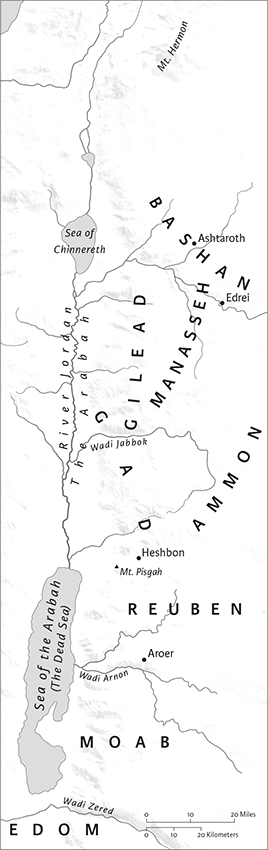
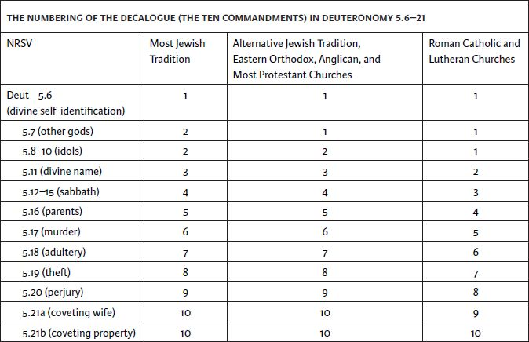
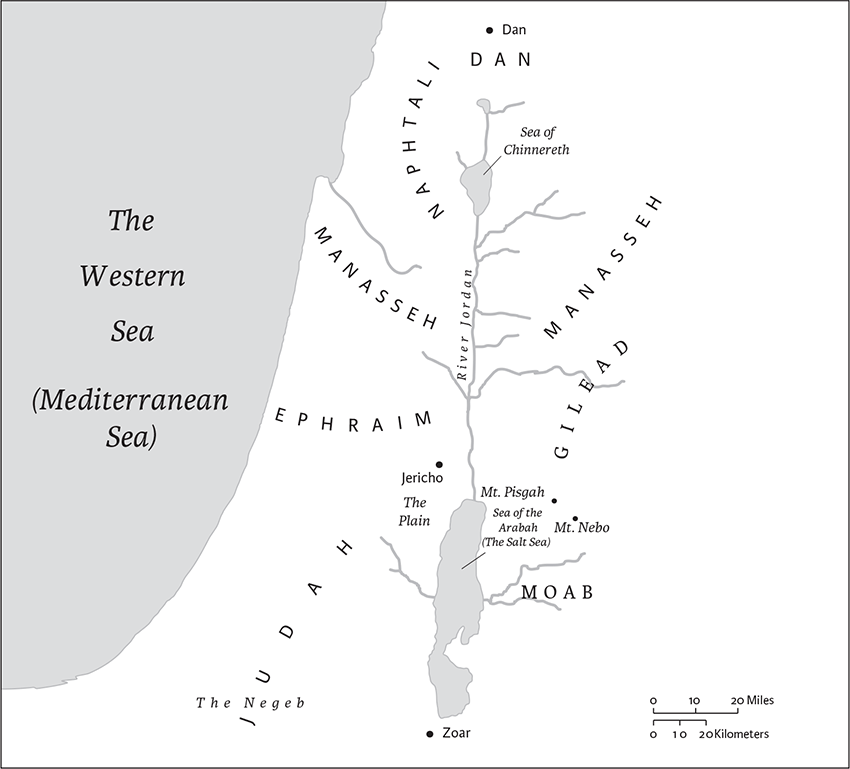
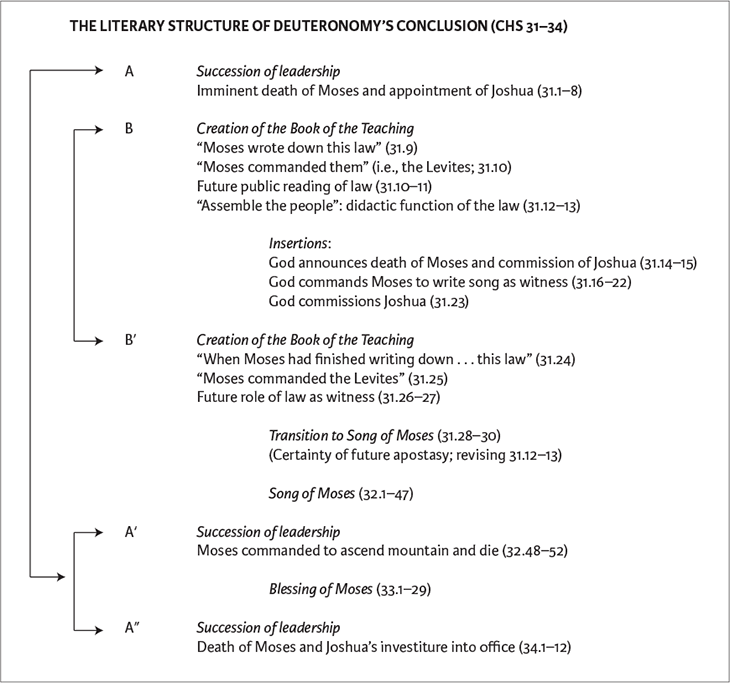

Deuteronomy
Name
The standard English name of the book comes from the ancient Greek Septuagint (from deuteronomion, yielding Latin Deuteronomium), and means “Second Law.” That approach to naming the book represents the Greek translation of the Hebrew phrase Mishneh Torah found in Deuteronomy’s Law of the King, where it more properly means “a copy of the law” (see 17.18n.); indeed, the title Mishneh Torah is sometimes used for the book in rabbinic literature. The name Deuteronomy reflects the early Jewish perspective that the book is Moses’s rehearsal of the Torah; according to Deuteronomy, Moses, shortly before he dies, revisits the earlier laws and narratives of the Tetrateuch (the first four books of the Bible) and teaches Israel about them. The main Hebrew name of the book is Debarim (“words”), from the book’s opening, “These are the words” (1.1), following an ancient Near Eastern convention of naming books after their opening phrase.
Authorship, Date, and Historical Context
Deuteronomy directly addresses the problem of the distance between past and present, between tradition and the needs of the contemporary generation, between revelation and interpretation. In that way, it is a remarkably modern text that instructs its audience in how to become more thoughtful readers of scripture. In narrative terms, Deuteronomy comes just as the Israelites, encamped on the plains of Moab, finally stand poised to enter the promised land. This entry into Canaan would provide the long‐awaited climax of the story that had begun with the promises to the ancestors in Genesis, and whose fulfillment had been delayed by the enslavement in Egypt and the wandering in the wilderness. Now, on the eve both of his death and of the nation’s entry into the land without him, Moses, as Deuteronomy’s speaker, interrupts the narrative action in order to deliver a series of three speeches (1.6–4.40; 5.1–28.68; 29.2–30.20), grouped together as a long farewell address. He reviews the nation’s history, expounds upon its laws, and instructs the people about the importance of loyalty to God. He also requires that the nation swear upon oath to uphold this combination of law and theological instruction as a covenant, one that supplements the prior covenant sworn at Horeb (the name for the mountain of revelation, called Sinai elsewhere; 29.1). Only after the conclusion of these discourses and a following appendix (chs 31–34) does the overall narrative line resume with the account of the nation’s entry into Canaan in the books of Joshua and Judges.
Despite the attribution of the text to Moses as its speaker, from the vantage point of modern biblical scholarship, Deuteronomy arose in its present form at a later period of Israelite history. The main sections of the book fit best in the seventh century bce as the composition of educated scribes associated with Jerusalem’s royal court. The striking similarities between the distinctive religious and legal requirements of Deuteronomy and the account of the major religious reform carried out by King Josiah of Judah in 622 bce (2 Kings 22–23) have long been recognized. That reform had been inspired by the discovery in the Temple of a “scroll of the Torah” (2 Kings 22.8; NRSV “book of the law”). Josiah’s reform restricted all sacrificial worship of God to Jerusalem and removed foreign elements from the system of worship; it culminated in the celebration of a nationally centralized passover at the Temple in Jerusalem (2 Kings 23.21–23). So strongly do these royal initiatives correspond to the distinctive requirements of Deuteronomy that scholars, both traditional and critical, have long identified the “scroll of the Torah” discovered in Josiah’s Temple as some form of the book of Deuteronomy.
Josiah’s reform, with Deuteronomy as its catalyst, was much more a revolution than a simple return to older forms of worship, as the book of Kings suggests. Previously, it had been entirely legitimate to sacrifice to God throughout the land, a principle reflected in biblical narratives such as Abraham at Shechem and near Bethel (Gen 12.7–8); Jacob at Bethel (Gen 35.1–7); Samuel at Mizpah, Ramah, Gilgal, and Bethlehem (1 Sam 7.9,17; 9.11–14; 10.8; 16.1–5); and Elijah upon Mount Carmel (1 Kings 18.20–46). Indeed, earlier biblical law stipulated that God would grant blessing “in every place where I [God] cause my name to be remembered” (Ex 20.24). Deuteronomy challenged that older norm, prohibiting sacrifice “at any place” (lit., “in every place”) and restricting it to a single site, implicitly Jerusalem (Deut 12.13–14). It is therefore striking that Deuteronomy presents itself as both an explication of the prior covenant (1.1–5) and as a supplement to it (29.1). Deuteronomy justifies itself in these two ways, yet neither description acknowledges the extent to which Deuteronomy actually challenges and revises earlier law in support of its new religious vision.
A century of Assyrian imperial domination serves as the historical background of Josiah’s reforms. The Northern Kingdom of Israel had fallen to the Assyrians in 722 bce (2 Kings 17). Continuing Assyrian incursions down the southeastern coast of the Mediterranean had all but reduced Judah to a rump‐state (2 Kings 18.13). In a desperate bid to preserve the nation’s autonomy, King Hezekiah of Judah made a pact with Assyria (2 Kings 18.13–18), as had his predecessor Ahaz (2 Kings 16.7–8). The resulting military allegiances may have led to religious syncretism, with foreign forms of worship introduced into the Temple (2 Kings 16.10–20; 21.1–6).
By the last quarter of the seventh century bce, Assyria’s might was in decline. In this context, Josiah’s religious reforms represented an important bid for Judean cultural, political, and religious autonomy. The monarch extended his reforms into the area of the former Northern Kingdom of Israel (2 Kings 23.15–20), territory formerly under Assyrian control. Deuteronomy, apparently written sometime during this historical crisis, likewise reflects the desire to preserve Judean cultural and religious integrity. Its authors were convinced that older conventions of worship and social organization were no longer viable. If the religion of the Lord was to survive the crisis, renewal and adaptation were necessary. The collection of laws that form the core of Deuteronomy (chs 12–26) provides a remarkably comprehensive program for cultural renewal. The laws deal with worship; the festival calendar; the major institutions of public life (justice, kingship, priesthood, prophecy); criminal, family, and civil law; and ethics. These laws are presented as the requirements of a covenant between God and the nation, which the people take an oath to uphold, upon penalty of sanctions, while maintaining unconditional loyalty to their God. That covenant structure closely corresponds to Neo‐Assyrian state treaties that have been recovered from this period, the most famous of which are the Vassal Treaties of Esarhaddon (672 bce). At a number of points, the authors of Deuteronomy seem consciously to have patterned their covenant after such treaties, treaties that had been repeatedly imposed upon Judah in the late eighth and seventh centuries bce. From this perspective, Deuteronomy is a countertreaty: Its authors turned the weapon of Assyrian imperialism into a bid for Judean independence, shifting its oath of loyalty from the Assyrian overlord to their divine sovereign.
The authors of Deuteronomy were thus tutored in international treaty conventions and elsewhere reveal their knowledge of the literary traditions of ancient Near Eastern law (see 15.1–18n.; 17.8–13n.,14–20n.; 22.13–30n.) and wisdom literature (1.13n.; 4.2n.). The authors of Deuteronomy made use of another common ancient Near Eastern convention as well. They did not directly attach their names to their compositions or write in their own voices; instead, they attributed their composition to a prestigious figure from the past. By employing Moses as their spokesperson, they established a link with tradition at precisely the time when tradition, for the sake of survival, had to be transformed. “Pseudepigraphy,” the convention of ascribing a text to an ancient personage, is particularly well known in the later literature of the Second Temple period; examples include Jubilees, 4 Ezra, the Testament of Abraham, and (among the Dead Sea Scrolls) the Temple Scroll.
Literary History
Deuteronomy preserves several layers of tradition—the structure of three different speeches given by Moses, with an appendix, already suggests a process of literary growth. That growth is closely connected to the gradual formation of the Hebrew Bible. When Deuteronomy was first promulgated, it would not have been part of any larger whole. Instead, it would have stood by itself as a “scroll of the Torah” (“book of the law”). It would have consisted of most of the laws of chs 12–26, framed by a relatively simple introduction and conclusion. This form of Deuteronomy presented itself as a treaty concluded between the nation and its God in a formal ceremony whereby each citizen took an oath of under penalty of strict sanctions (28.1–46). This was very likely the preexilic form of Deuteronomy.
At a later stage, presumably sometime during the Exile in the mid‐sixth century bce, Deuteronomy would have been incorporated into the Deuteronomistic History (the books of Joshua, Judges, Samuel, and Kings) to serve as its introduction. At this point, the Deuteronomistic editors would have given the book its literary frame (1.1–4.40; chs 31–34), while also adding to the collection of laws, selectively tying its promises or expectations to the later historical material. Expansions in Deuteronomy that reflect the Babylonian exile may derive from this stage (see 4.25–31; 28.47–56; 30.1–10).
At a still later point, in the exilic or postexilic period, Priestly editors appended Deuteronomy to the nascent Pentateuch to serve as its conclusion. Ironically, the decision to conclude the Pentateuch with Deuteronomy interrupted and delayed the logically expected climax of the larger narrative of Genesis through Numbers: the conquest of the land. This narrative climax was instead deferred to the books of Joshua and Judges. The final form of Deuteronomy also contains supplemental material that seems to reflect postexilic concerns.
In the final chapters of Deuteronomy, these three viewpoints (Deuteronomic, Deuteronomistic, and Priestly) operate simultaneously, creating a complex interplay of perspectives. The legal section is brought to its conclusion with a formal ratification ceremony involving the swearing of an oath to assume the penalties for transgressing the covenant (chs 29–31). At the same time, other editors worked to embed Deuteronomy in the Deuteronomistic History. Still other editors tied the book to Genesis–Numbers and thus make the creation of Torah—no longer the occupation of the land—the climax of the newly created Pentateuch. The three perspectives operate concurrently, spinning like Ezekiel’s vision of “a wheel within a wheel” (Ezek 1.16).
Structure and Contents
| 1.1–4.43 | I. The first discourse of Moses |
| 1.1–5 | A. Editorial heading |
| 1.6–3.29 | B. Historical review |
| 4.1–40 | C. Exhortation to obey the teaching of Moses |
| 4.41–43 | D. Appendix: Cities of refuge in Transjordan |
| 4.44–28.68 | II. The second discourse of Moses |
| 4.44–49 | A. Introduction |
| 5.1–33 | B. The revelation of the Decalogue at Sinai/Horeb |
| 6.1–11.32 | C. Preamble to the laws: the requirement of loyalty to God |
| 12.1–26.15 | D. The legal corpus: Deuteronomy’s transformation of earlier Israelite religion |
| 26.16–19 | E. Formal conclusion: the reciprocity of the covenant |
| 27.1–26 | F. Ceremonies at Shechem upon entry into the land |
| 28.1–68 | G. The consequences of obedience or disobedience: blessing or curse |
| 29.1–30.20 | III. The third discourse of Moses: the ratification ceremony for the covenant on the plains of Moab |
| 29.1 | A. Editorial heading: the relation between Moab and Horeb |
| 29.2–9 | B. Didactic review of Israel’s history |
| 29.10–29 | C. Imprecation to ensure loyalty to the covenant |
| 30.1–10 | D. Reassurance of restoration |
| 30.11–14 | E. The accessibility of Moses’s teaching |
| 30.15–20 | F. The necessity of choice |
| 31.1–34.12 | IV. The death of Moses and the formation of the Book of the Teaching |
| 31.1–29 | A. Moses makes arrangements for his death |
| 31.30–32.43 | B. The Song of Moses |
| 32.44–47 | C. Double conclusion to the Song |
| 32.48–52 | D. Moses commanded to die |
| 33.1–29 | E. The blessing of Moses |
| 34.1–12 | F. The death of Moses |
Interpretation
Deuteronomy challenges its readers actively to confront the problem of the relation between revelation and interpretation, and breaks down conventional boundaries between scripture and tradition. It makes paradox central to its structure: the book distinctively narrates the process of its own formation (31.1–12) while also anticipating its prior existence as a complete literary work (17.18; 28.58; 30.10). Interpretation is directly and indirectly a theme of Deuteronomy (see 1.5). At many points, the authors of Deuteronomy reinterpret earlier narratives (see 6.1n.) and laws (particularly from the Book of the Covenant or Covenant Code in Ex 20–23). Moreover, the process of the book’s editing intentionally preserves conflicting perspectives on a full range of issues central to Israelite religion: on whether the revelation of the Decalogue at Horeb was direct or required the mediation of Moses (5.5n.); on the stature of Moses relative to other prophets (34.10n.); on the nature of divine punishment for sin (5.9–10n.; 7.10n.); on whether God rules as head of a pantheon or is the only God who exists (4.7–8n., 15–31n., 35n.; 32.8n.); and even on Deuteronomy’s own setting in time and place (1.1n.; 2.12n.; 3.11n.). These mutually exclusive positions preserve an ongoing ancient debate about fundamental religious assumptions. The editors of Deuteronomy opted against closure: they preserved these different schools of thought. Accordingly, there is in Deuteronomy no access to God in the covenant without entering into this debate. The modern reader of Deuteronomy must become, like the authors of Deuteronomy, an interpreter.
Bernard M. Levinson
1 These are the words that Moses spoke to all Israel beyond the Jordan—in the wilderness, on the plain opposite Suph, between Paran and Tophel, Laban, Hazeroth, and Di‐zahab. 2(By the way of Mount Seir it takes eleven days to reach Kadesh‐barnea from Horeb.) 3In the fortieth year, on the first day of the eleventh month, Moses spoke to the Israelites just as the Lord had commanded him to speak to them. 4This was after he had defeated King Sihon of the Amorites, who reigned in Heshbon, and King Og of Bashan, who reigned in Ashtaroth anda in Edrei. 5Beyond the Jordan in the land of Moab, Moses undertook to expound this law as follows:
6The Lord our God spoke to us at Horeb, saying, “You have stayed long enough at this mountain. 7Resume your journey, and go into the hill country of the Amorites as well as into the neighboring regions—the Arabah, the hill country, the Shephelah, the Negeb, and the seacoast—the land of the Canaanites and the Lebanon, as far as the great river, the river Euphrates. 8See, I have set the land before you; go in and take possession of the land that Ia swore to your ancestors, to Abraham, to Isaac, and to Jacob, to give to them and to their descendants after them.”
9At that time I said to you, “I am unable by myself to bear you. 10The Lord your God has multiplied you, so that today you are as numerous as the stars of heaven. 11May the Lord, the God of your ancestors, increase you a thousand times more and bless you, as he has promised you! 12But how can I bear the heavy burden of your disputes all by myself? 13Choose for each of your tribes individuals who are wise, discerning, and reputable to be your leaders.” 14You answered me, “The plan you have proposed is a good one.” 15So I took the leaders of your tribes, wise and reputable individuals, and installed them as leaders over you, commanders of thousands, commanders of hundreds, commanders of fifties, commanders of tens, and officials, throughout your tribes. 16I charged your judges at that time: “Give the members of your community a fair hearing, and judge rightly between one person and another, whether citizen or resident alien. 17You must not be partial in judging: hear out the small and the great alike; you shall not be intimidated by anyone, for the judgment is God’s. Any case that is too hard for you, bring to me, and I will hear it.” 18So I charged you at that time with all the things that you should do.
19Then, just as the Lord our God had ordered us, we set out from Horeb and went through all that great and terrible wilderness that you saw, on the way to the hill country of the Amorites, until we reached Kadeshbarnea. 20I said to you, “You have reached the hill country of the Amorites, which the Lord our God is giving us. 21See, the Lord your God has given the land to you; go up, take possession, as the Lord, the God of your ancestors, has promised you; do not fear or be dismayed.”
22All of you came to me and said, “Let us send men ahead of us to explore the land for us and bring back a report to us regarding the route by which we should go up and the cities we will come to.” 23The plan seemed good to me, and I selected twelve of you, one from each tribe. 24They set out and went up into the hill country, and when they reached the Valley of Eshcol they spied it out 25and gathered some of the land’s produce, which they brought down to us. They brought back a report to us, and said, “It is a good land that the Lord our God is giving us.”
26But you were unwilling to go up. You rebelled against the command of the Lord your God; 27you grumbled in your tents and said, “It is because the Lord hates us that he has brought us out of the land of Egypt, to hand us over to the Amorites to destroy us. 28Where are we headed? Our kindred have made our hearts melt by reporting, ‘The people are stronger and taller than we; the cities are large and fortified up to heaven! We actually saw there the offspring of the Anakim!’” 29I said to you, “Have no dread or fear of them. 30The Lord your God, who goes before you, is the one who will fight for you, just as he did for you in Egypt before your very eyes, 31and in the wilderness, where you saw how the Lord your God carried you, just as one carries a child, all the way that you traveled until you reached this place. 32But in spite of this, you have no trust in the Lord your God, 33who goes before you on the way to seek out a place for you to camp, in fire by night, and in the cloud by day, to show you the route you should take.”
34When the Lord heard your words, he was wrathful and swore: 35“Not one of these—not one of this evil generation—shall see the good land that I swore to give to your ancestors, 36except Caleb son of Jephunneh. He shall see it, and to him and to his descendants I will give the land on which he set foot, because of his complete fidelity to the Lord.” 37Even with me the Lord was angry on your account, saying, “You also shall not enter there. 38Joshua son of Nun, your assistant, shall enter there; encourage him, for he is the one who will secure Israel’s possession of it. 39And as for your little ones, who you thought would become booty, your children, who today do not yet know right from wrong, they shall enter there; to them I will give it, and they shall take possession of it. 40But as for you, journey back into the wilderness, in the direction of the Red Sea.”a
41You answered me, “We have sinned against the Lord! We are ready to go up and fight, just as the Lord our God commanded us.” So all of you strapped on your battle gear, and thought it easy to go up into the hill country. 42The Lord said to me, “Say to them, ‘Do not go up and do not fight, for I am not in the midst of you; otherwise you will be defeated by your enemies.’” 43Although I told you, you would not listen. You rebelled against the command of the Lord and presumptuously went up into the hill country. 44The Amorites who lived in that hill country then came out against you and chased you as bees do. They beat you down in Seir as far as Hormah. 45When you returned and wept before the Lord, the Lord would neither heed your voice nor pay you any attention.
2 46After you had stayed at Kadesh as many days as you did,1we journeyed back into the wilderness, in the direction of the Red Sea,a as the Lord had told me and skirted Mount Seir for many days. 2Then the Lord said to me: 3“You have been skirting this hill country long enough. Head north, 4and charge the people as follows: You are about to pass through the territory of your kindred, the descendants of Esau, who live in Seir. They will be afraid of you, so, be very careful 5not to engage in battle with them, for I will not give you even so much as a foot’s length of their land, since I have given Mount Seir to Esau as a possession. 6You shall purchase food from them for money, so that you may eat; and you shall also buy water from them for money, so that you may drink. 7Surely the Lord your God has blessed you in all your undertakings; he knows your going through this great wilderness. These forty years the Lord your God has been with you; you have lacked nothing.” 8So we passed by our kin, the descendants of Esau who live in Seir, leaving behind the route of the Arabah, and leaving behind Elath and Ezion‐geber.

The circuit via Transjordan
When we had headed out along the route of the wilderness of Moab, 9the Lord said to me: “Do not harass Moab or engage them in battle, for I will not give you any of its land as a possession, since I have given Ar as a possession to the descendants of Lot.” 10(The Emim—a large and numerous people, as tall as the Anakim—had formerly inhabited it. 11Like the Anakim, they are usually reckoned as Rephaim, though the Moabites call them Emim. 12Moreover, the Horim had formerly inhabited Seir, but the descendants of Esau dispossessed them, destroying them and settling in their place, as Israel has done in the land that the Lord gave them as a possession.) 13“Now then, proceed to cross over the Wadi Zered.”
So we crossed over the Wadi Zered. 14And the length of time we had traveled from Kadesh‐barnea until we crossed the Wadi Zered was thirty‐eight years, until the entire generation of warriors had perished from the camp, as the Lord had sworn concerning them. 15Indeed, the Lord’s own hand was against them, to root them out from the camp, until all had perished.
16Just as soon as all the warriors had died off from among the people, 17the Lord spoke to me, saying, 18“Today you are going to cross the boundary of Moab at Ar. 19When you approach the frontier of the Ammonites, do not harass them or engage them in battle, for I will not give the land of the Ammonites to you as a possession, because I have given it to the descendants of Lot.” 20(It also is usually reckoned as a land of Rephaim. Rephaim formerly inhabited it, though the Ammonites call them Zamzummim, 21a strong and numerous people, as tall as the Anakim. But the Lord destroyed them from before the Ammonites so that they could dispossess them and settle in their place. 22He did the same for the descendants of Esau, who live in Seir, by destroying the Horim before them so that they could dispossess them and settle in their place even to this day. 23As for the Avvim, who had lived in settlements in the vicinity of Gaza, the Caphtorim, who came from Caphtor, destroyed them and settled in their place.) 24“Proceed on your journey and cross the Wadi Arnon. See, I have handed over to you King Sihon the Amorite of Heshbon, and his land. Begin to take possession by engaging him in battle. 25This day I will begin to put the dread and fear of you upon the peoples everywhere under heaven; when they hear report of you, they will tremble and be in anguish because of you.”
26So I sent messengers from the wilderness of Kedemoth to King Sihon of Heshbon with the following terms of peace: 27“If you let me pass through your land, I will travel only along the road; I will turn aside neither to the right nor to the left. 28You shall sell me food for money, so that I may eat, and supply me water for money, so that I may drink. Only allow me to pass through on foot— 29just as the descendants of Esau who live in Seir have done for me and likewise the Moabites who live in Ar—until I cross the Jordan into the land that the Lord our God is giving us.” 30But King Sihon of Heshbon was not willing to let us pass through, for the Lord your God had hardened his spirit and made his heart defiant in order to hand him over to you, as he has now done.
31The Lord said to me, “See, I have begun to give Sihon and his land over to you. Begin now to take possession of his land.” 32So when Sihon came out against us, he and all his people for battle at Jahaz, 33the Lord our God gave him over to us; and we struck him down, along with his offspring and all his people. 34At that time we captured all his towns, and in each town we utterly destroyed men, women, and children. We left not a single survivor. 35Only the livestock we kept as spoil for ourselves, as well as the plunder of the towns that we had captured. 36From Aroer on the edge of the Wadi Arnon (including the town that is in the wadi itself) as far as Gilead, there was no citadel too high for us. The Lord our God gave everything to us. 37You did not encroach, however, on the land of the Ammonites, avoiding the whole upper region of the Wadi Jabbok as well as the towns of the hill country, just asa the Lord our God had charged.
3 When we headed up the road to Bashan, King Og of Bashan came out against us, he and all his people, for battle at Edrei. 2The Lord said to me, “Do not fear him, for I have handed him over to you, along with his people and his land. Do to him as you did to King Sihon of the Amorites, who reigned in Heshbon.” 3So the Lord our God also handed over to us King Og of Bashan and all his people. We struck him down until not a single survivor was left. 4At that time we captured all his towns; there was no citadel that we did not take from them—sixty towns, the whole region of Argob, the kingdom of Og in Bashan. 5All these were fortress towns with high walls, double gates, and bars, besides a great many villages. 6And we utterly destroyed them, as we had done to King Sihon of Heshbon, in each city utterly destroying men, women, and children. 7But all the livestock and the plunder of the towns we kept as spoil for ourselves.
8So at that time we took from the two kings of the Amorites the land beyond the Jordan, from the Wadi Arnon to Mount Hermon 9(the Sidonians call Hermon Sirion, while the Amorites call it Senir), 10all the towns of the tableland, the whole of Gilead, and all of Bashan, as far as Salecah and Edrei, towns of Og’s kingdom in Bashan. 11(Now only King Og of Bashan was left of the remnant of the Rephaim. In fact his bed, an iron bed, can still be seen in Rabbah of the Ammonites. By the common cubit it is nine cubits long and four cubits wide.) 12As for the land that we took possession of at that time, I gave to the Reubenites and Gadites the territory north of Aroer,a that is on the edge of the Wadi Arnon, as well as half the hill country of Gilead with its towns, 13and I gave to the half‐tribe of Manasseh the rest of Gilead and all of Bashan, Og’s kingdom. (The whole region of Argob: all that portion of Bashan used to be called a land of Rephaim; 14Jair the Manassite acquired the whole region of Argob as far as the border of the Geshurites and the Maacathites, and he named them—that is, Bashan—after himself, Havvoth‐jair,b as it is to this day.) 15To Machir I gave Gilead. 16And to the Reubenites and the Gadites I gave the territory from Gilead as far as the Wadi Arnon, with the middle of the wadi as a boundary, and up to the Jabbok, the wadi being boundary of the Ammonites; 17the Arabah also, with the Jordan and its banks, from Chinnereth down to the sea of the Arabah, the Dead Sea,c with the lower slopes of Pisgah on the east.
18At that time, I charged you as follows: “Although the Lord your God has given you this land to occupy, all your troops shall cross over armed as the vanguard of your Israelite kin. 19Only your wives, your children, and your livestock—I know that you have much livestock—shall stay behind in the towns that I have given to you. 20When the Lord gives rest to your kindred, as to you, and they too have occupied the land that the Lord your God is giving them beyond the Jordan, then each of you may return to the property that I have given to you.” 21And I charged Joshua as well at that time, saying: “Your own eyes have seen everything that the Lord your God has done to these two kings; so the Lord will do to all the kingdoms into which you are about to cross. 22Do not fear them, for it is the Lord your God who fights for you.”
23At that time, too, I entreated the Lord, saying: 24“O Lord God, you have only begun to show your servant your greatness and your might; what god in heaven or on earth can perform deeds and mighty acts like yours! 25Let me cross over to see the good land beyond the Jordan, that good hill country and the Lebanon.” 26But the Lord was angry with me on your account and would not heed me. The Lord said to me, “Enough from you! Never speak to me of this matter again! 27Go up to the top of Pisgah and look around you to the west, to the north, to the south, and to the east. Look well, for you shall not cross over this Jordan. 28But charge Joshua, and encourage and strengthen him, because it is he who shall cross over at the head of this people and who shall secure their possession of the land that you will see.” 29So we remained in the valley opposite Beth‐peor.
4 So now, Israel, give heed to the statutes and ordinances that I am teaching you to observe, so that you may live to enter and occupy the land that the Lord, the God of your ancestors, is giving you. 2You must neither add anything to what I command you nor take away anything from it, but keep the commandments of the Lord your God with which I am charging you. 3You have seen for yourselves what the Lord did with regard to the Baal of Peor—how the Lord your God destroyed from among you everyone who followed the Baal of Peor, 4while those of you who held fast to the Lord your God are all alive today.
5See, just as the Lord my God has charged me, I now teach you statutes and ordinances for you to observe in the land that you are about to enter and occupy. 6You must observe them diligently, for this will show your wisdom and discernment to the peoples, who, when they hear all these statutes, will say, “Surely this great nation is a wise and discerning people!” 7For what other great nation has a god so near to it as the Lord our God is whenever we call to him? 8And what other great nation has statutes and ordinances as just as this entire law that I am setting before you today?
9But take care and watch yourselves closely, so as neither to forget the things that your eyes have seen nor to let them slip from your mind all the days of your life; make them known to your children and your children’s children— 10how you once stood before the Lord your God at Horeb, when the Lord said to me, “Assemble the people for me, and I will let them hear my words, so that they may learn to fear me as long as they live on the earth, and may teach their children so”; 11you approached and stood at the foot of the mountain while the mountain was blazing up to the very heavens, shrouded in dark clouds. 12Then the Lord spoke to you out of the fire. You heard the sound of words but saw no form; there was only a voice. 13He declared to you his covenant, which he charged you to observe, that is, the ten commandments;a and he wrote them on two stone tablets. 14And the Lord charged me at that time to teach you statutes and ordinances for you to observe in the land that you are about to cross into and occupy.
15Since you saw no form when the Lord spoke to you at Horeb out of the fire, take care and watch yourselves closely, 16so that you do not act corruptly by making an idol for yourselves, in the form of any figure— the likeness of male or female, 17the likeness of any animal that is on the earth, the likeness of any winged bird that flies in the air, 18the likeness of anything that creeps on the ground, the likeness of any fish that is in the water under the earth. 19And when you look up to the heavens and see the sun, the moon, and the stars, all the host of heaven, do not be led astray and bow down to them and serve them, things that the Lord your God has allotted to all the peoples everywhere under heaven. 20But the Lord has taken you and brought you out of the iron‐smelter, out of Egypt, to become a people of his very own possession, as you are now.
21The Lord was angry with me because of you, and he vowed that I should not cross the Jordan and that I should not enter the good land that the Lord your God is giving for your possession. 22For I am going to die in this land without crossing over the Jordan, but you are going to cross over to take possession of that good land. 23So be careful not to forget the covenant that the Lord your God made with you, and not to make for yourselves an idol in the form of anything that the Lord your God has forbidden you. 24For the Lord your God is a devouring fire, a jealous God.
25When you have had children and children’s children, and become complacent in the land, if you act corruptly by making an idol in the form of anything, thus doing what is evil in the sight of the Lord your God, and provoking him to anger, 26I call heaven and earth to witness against you today that you will soon utterly perish from the land that you are crossing the Jordan to occupy; you will not live long on it, but will be utterly destroyed. 27The Lord will scatter you among the peoples; only a few of you will be left among the nations where the Lord will lead you. 28There you will serve other gods made by human hands, objects of wood and stone that neither see, nor hear, nor eat, nor smell. 29From there you will seek the Lord your God, and you will find him if you search after him with all your heart and soul. 30In your distress, when all these things have happened to you in time to come, you will return to the Lord your God and heed him. 31Because the Lord your God is a merciful God, he will neither abandon you nor destroy you; he will not forget the covenant with your ancestors that he swore to them.
32For ask now about former ages, long before your own, ever since the day that God created human beings on the earth; ask from one end of heaven to the other: has anything so great as this ever happened or has its like ever been heard of? 33Has any people ever heard the voice of a god speaking out of a fire, as you have heard, and lived? 34Or has any god ever attempted to go and take a nation for himself from the midst of another nation, by trials, by signs and wonders, by war, by a mighty hand and an outstretched arm, and by terrifying displays of power, as the Lord your God did for you in Egypt before your very eyes? 35To you it was shown so that you would acknowledge that the Lord is God; there is no other besides him. 36From heaven he made you hear his voice to discipline you. On earth he showed you his great fire, while you heard his words coming out of the fire. 37And because he loved your ancestors, he chose their descendants after them. He brought you out of Egypt with his own presence, by his great power, 38driving out before you nations greater and mightier than yourselves, to bring you in, giving you their land for a possession, as it is still today. 39So acknowledge today and take to heart that the Lord is God in heaven above and on the earth beneath; there is no other. 40Keep his statutes and his commandments, which I am commanding you today for your own well‐being and that of your descendants after you, so that you may long remain in the land that the Lord your God is giving you for all time.
41Then Moses set apart on the east side of the Jordan three cities 42to which a homicide could flee, someone who unintentionally kills another person, the two not having been at enmity before; the homicide could flee to one of these cities and live: 43Bezer in the wilderness on the tableland belonging to the Reubenites, Ramoth in Gilead belonging to the Gadites, and Golan in Bashan belonging to the Manassites.
44This is the law that Moses set before the Israelites. 45These are the decrees and the statutes and ordinances that Moses spoke to the Israelites when they had come out of Egypt, 46beyond the Jordan in the valley opposite Beth‐peor, in the land of King Sihon of the Amorites, who reigned at Heshbon, whom Moses and the Israelites defeated when they came out of Egypt. 47They occupied his land and the land of King Og of Bashan, the two kings of the Amorites on the eastern side of the Jordan: 48from Aroer, which is on the edge of the Wadi Arnon, as far as Mount Siriona (that is, Hermon), 49together with all the Arabah on the east side of the Jordan as far as the Sea of the Arabah, under the slopes of Pisgah.
5 Moses convened all Israel, and said to them:
Hear, O Israel, the statutes and ordinances that I am addressing to you today; you shall learn them and observe them diligently. 2The Lord our God made a covenant with us at Horeb. 3Not with our ancestors did the Lord make this covenant, but with us, who are all of us here alive today. 4The Lord spoke with you face to face at the mountain, out of the fire. 5(At that time I was standing between the Lord and you to declare to you the wordsb of the Lord; for you were afraid because of the fire and did not go up the mountain.) And he said:
6I am the Lord your God, who brought you out of the land of Egypt, out of the house of slavery; 7you shall have no other gods beforec me.
8You shall not make for yourself an idol, whether in the form of anything that is in heaven above, or that is on the earth beneath, or that is in the water under the earth. 9You shall not bow down to them or worship them; for I the Lord your God am a jealous God, punishing children for the iniquity of parents, to the third and fourth generation of those who reject me, 10but showing steadfast love to the thousandth generationa of those who love me and keep my commandments.

11You shall not make wrongful use of the name of the Lord your God, for the Lord will not acquit anyone who misuses his name.
12Observe the sabbath day and keep it holy, as the Lord your God commanded you. 13Six days you shall labor and do all your work. 14But the seventh day is a sabbath to the Lord your God; you shall not do any work—you, or your son or your daughter, or your male or female slave, or your ox or your donkey, or any of your livestock, or the resident alien in your towns, so that your male and female slave may rest as well as you. 15Remember that you were a slave in the land of Egypt, and the Lord your God brought you out from there with a mighty hand and an outstretched arm; therefore the Lord your God commanded you to keep the sabbath day.
16Honor your father and your mother, as the Lord your God commanded you, so that your days may be long and that it may go well with you in the land that the Lord your God is giving you.
Neither shall you desire your neighbor’s house, or field, or male or female slave, or ox, or donkey, or anything that belongs to your neighbor.
22These words the Lord spoke with a loud voice to your whole assembly at the mountain, out of the fire, the cloud, and the thick darkness, and he added no more. He wrote them on two stone tablets, and gave them to me. 23When you heard the voice out of the darkness, while the mountain was burning with fire, you approached me, all the heads of your tribes and your elders; 24and you said, “Look, the Lord our God has shown us his glory and greatness, and we have heard his voice out of the fire. Today we have seen that God may speak to someone and the person may still live. 25So now why should we die? For this great fire will consume us; if we hear the voice of the Lord our God any longer, we shall die. 26For who is there of all flesh that has heard the voice of the living God speaking out of fire, as we have, and remained alive? 27Go near, you yourself, and hear all that the Lord our God will say. Then tell us everything that the Lord our God tells you, and we will listen and do it.”
28The Lord heard your words when you spoke to me, and the Lord said to me: “I have heard the words of this people, which they have spoken to you; they are right in all that they have spoken. 29If only they had such a mind as this, to fear me and to keep all my commandments always, so that it might go well with them and with their children forever! 30Go say to them, ‘Return to your tents.’ 31But you, stand here by me, and I will tell you all the commandments, the statutes and the ordinances, that you shall teach them, so that they may do them in the land that I am giving them to possess.” 32You must therefore be careful to do as the Lord your God has commanded you; you shall not turn to the right or to the left. 33You must follow exactly the path that the Lord your God has commanded you, so that you may live, and that it may go well with you, and that you may live long in the land that you are to possess.
6 Now this is the commandment—the statutes and the ordinances—that the Lord your God charged me to teach you to observe in the land that you are about to cross into and occupy, 2so that you and your children and your children’s children may fear the Lord your God all the days of your life, and keep all his decrees and his commandments that I am commanding you, so that your days may be long. 3Hear therefore, O Israel, and observe them diligently, so that it may go well with you, and so that you may multiply greatly in a land flowing with milk and honey, as the Lord, the God of your ancestors, has promised you.
4Hear, O Israel: The Lord is our God, the Lord alone.a 5You shall love the Lord your God with all your heart, and with all your soul, and with all your might. 6Keep these words that I am commanding you today in your heart. 7Recite them to your children and talk about them when you are at home and when you are away, when you lie down and when you rise. 8Bind them as a sign on your hand, fix them as an emblemb on your forehead, 9and write them on the doorposts of your house and on your gates.
10When the Lord your God has brought you into the land that he swore to your ancestors, to Abraham, to Isaac, and to Jacob, to give you—a land with fine, large cities that you did not build, 11houses filled with all sorts of goods that you did not fill, hewn cisterns that you did not hew, vineyards and olive groves that you did not plant—and when you have eaten your fill, 12take care that you do not forget the Lord, who brought you out of the land of Egypt, out of the house of slavery. 13The Lord your God you shall fear; him you shall serve, and by his name alone you shall swear. 14Do not follow other gods, any of the gods of the peoples who are all around you, 15because the Lord your God, who is present with you, is a jealous God. The anger of the Lord your God would be kindled against you and he would destroy you from the face of the earth.
16Do not put the Lord your God to the test, as you tested him at Massah. 17You must diligently keep the commandments of the Lord your God, and his decrees, and his statutes that he has commanded you. 18Do what is right and good in the sight of the Lord, so that it may go well with you, and so that you may go in and occupy the good land that the Lord swore to your ancestors to give you, 19thrusting out all your enemies from before you, as the Lord has promised.
20When your children ask you in time to come, “What is the meaning of the decrees and the statutes and the ordinances that the Lord our God has commanded you?” 21then you shall say to your children, “We were Pharaoh’s slaves in Egypt, but the Lord brought us out of Egypt with a mighty hand. 22The Lord displayed before our eyes great and awesome signs and wonders against Egypt, against Pharaoh and all his household. 23He brought us out from there in order to bring us in, to give us the land that he promised on oath to our ancestors. 24Then the Lord commanded us to observe all these statutes, to fear the Lord our God, for our lasting good, so as to keep us alive, as is now the case. 25If we diligently observe this entire commandment before the Lord our God, as he has commanded us, we will be in the right.”
7 When the Lord your God brings you into the land that you are about to enter and occupy, and he clears away many nations before you—the Hittites, the Girgashites, the Amorites, the Canaanites, the Perizzites, the Hivites, and the Jebusites, seven nations mightier and more numerous than you—2and when the Lord your God gives them over to you and you defeat them, then you must utterly destroy them. Make no covenant with them and show them no mercy. 3Do not intermarry with them, giving your daughters to their sons or taking their daughters for your sons, 4for that would turn away your children from following me, to serve other gods. Then the anger of the Lord would be kindled against you, and he would destroy you quickly. 5But this is how you must deal with them: break down their altars, smash their pillars, hew down their sacred poles,a and burn their idols with fire. 6For you are a people holy to the Lord your God; the Lord your God has chosen you out of all the peoples on earth to be his people, his treasured possession.
7It was not because you were more numerous than any other people that the Lord set his heart on you and chose you—for you were the fewest of all peoples. 8It was because the Lord loved you and kept the oath that he swore to your ancestors, that the Lord has brought you out with a mighty hand, and redeemed you from the house of slavery, from the hand of Pharaoh king of Egypt. 9Know therefore that the Lord your God is God, the faithful God who maintains covenant loyalty with those who love him and keep his commandments, to a thousand generations, 10and who repays in their own person those who reject him. He does not delay but repays in their own person those who reject him. 11Therefore, observe diligently the commandment—the statutes and the ordinances—that I am commanding you today.
12If you heed these ordinances, by diligently observing them, the Lord your God will maintain with you the covenant loyalty that he swore to your ancestors; 13he will love you, bless you, and multiply you; he will bless the fruit of your womb and the fruit of your ground, your grain and your wine and your oil, the increase of your cattle and the issue of your flock, in the land that he swore to your ancestors to give you. 14You shall be the most blessed of peoples, with neither sterility nor barrenness among you or your livestock. 15The Lord will turn away from you every illness; all the dread diseases of Egypt that you experienced, he will not inflict on you, but he will lay them on all who hate you. 16You shall devour all the peoples that the Lord your God is giving over to you, showing them no pity; you shall not serve their gods, for that would be a snare to you.
17If you say to yourself, “These nations are more numerous than I; how can I dispossess them?” 18do not be afraid of them. Just remember what the Lord your God did to Pharaoh and to all Egypt, 19the great trials that your eyes saw, the signs and wonders, the mighty hand and the outstretched arm by which the Lord your God brought you out. The Lord your God will do the same to all the peoples of whom you are afraid. 20Moreover, the Lord your God will send the pestilencea against them, until even the survivors and the fugitives are destroyed. 21Have no dread of them, for the Lord your God, who is present with you, is a great and awesome God. 22The Lord your God will clear away these nations before you little by little; you will not be able to make a quick end of them, otherwise the wild animals would become too numerous for you. 23But the Lord your God will give them over to you, and throw them into great panic, until they are destroyed. 24He will hand their kings over to you and you shall blot out their name from under heaven; no one will be able to stand against you, until you have destroyed them. 25The images of their gods you shall burn with fire. Do not covet the silver or the gold that is on them and take it for yourself, because you could be ensnared by it; for it is abhorrent to the Lord your God. 26Do not bring an abhorrent thing into your house, or you will be set apart for destruction like it. You must utterly detest and abhor it, for it is set apart for destruction.
8 This entire commandment that I command you today you must diligently observe, so that you may live and increase, and go in and occupy the land that the Lord promised on oath to your ancestors. 2Remember the long way that the Lord your God has led you these forty years in the wilderness, in order to humble you, testing you to know what was in your heart, whether or not you would keep his commandments. 3He humbled you by letting you hunger, then by feeding you with manna, with which neither you nor your ancestors were acquainted, in order to make you understand that one does not live by bread alone, but by every word that comes from the mouth of the Lord.a 4The clothes on your back did not wear out and your feet did not swell these forty years. 5Know then in your heart that as a parent disciplines a child so the Lord your God disciplines you. 6Therefore keep the commandments of the Lord your God, by walking in his ways and by fearing him. 7For the Lord your God is bringing you into a good land, a land with flowing streams, with springs and underground waters welling up in valleys and hills, 8a land of wheat and barley, of vines and fig trees and pomegranates, a land of olive trees and honey, 9a land where you may eat bread without scarcity, where you will lack nothing, a land whose stones are iron and from whose hills you may mine copper. 10You shall eat your fill and bless the Lord your God for the good land that he has given you.
11Take care that you do not forget the Lord your God, by failing to keep his commandments, his ordinances, and his statutes, which I am commanding you today. 12When you have eaten your fill and have built fine houses and live in them, 13and when your herds and flocks have multiplied, and your silver and gold is multiplied, and all that you have is multiplied, 14then do not exalt yourself, forgetting the Lord your God, who brought you out of the land of Egypt, out of the house of slavery, 15who led you through the great and terrible wilderness, an arid wasteland with poisonousb snakes and scorpions. He made water flow for you from flint rock, 16and fed you in the wilderness with manna that your ancestors did not know, to humble you and to test you, and in the end to do you good. 17Do not say to yourself, “My power and the might of my own hand have gotten me this wealth.” 18But remember the Lord your God, for it is he who gives you power to get wealth, so that he may confirm his covenant that he swore to your ancestors, as he is doing today. 19If you do forget the Lord your God and follow other gods to serve and worship them, I solemnly warn you today that you shall surely perish. 20Like the nations that the Lord is destroying before you, so shall you perish, because you would not obey the voice of the Lord your God.
9 Hear, O Israel! You are about to cross the Jordan today, to go in and dispossess nations larger and mightier than you, great cities, fortified to the heavens, 2a strong and tall people, the offspring of the Anakim, whom you know. You have heard it said of them, “Who can stand up to the Anakim?” 3Know then today that the Lord your God is the one who crosses over before you as a devouring fire; he will defeat them and subdue them before you, so that you may dispossess and destroy them quickly, as the Lord has promised you.
4When the Lord your God thrusts them out before you, do not say to yourself, “It is because of my righteousness that the Lord has brought me in to occupy this land”; it is rather because of the wickedness of these nations that the Lord is dispossessing them before you. 5It is not because of your righteousness or the uprightness of your heart that you are going in to occupy their land; but because of the wickedness of these nations the Lord your God is dispossessing them before you, in order to fulfill the promise that the Lord made on oath to your ancestors, to Abraham, to Isaac, and to Jacob.
6Know, then, that the Lord your God is not giving you this good land to occupy because of your righteousness; for you are a stubborn people. 7Remember and do not forget how you provoked the Lord your God to wrath in the wilderness; you have been rebellious against the Lord from the day you came out of the land of Egypt until you came to this place.
8Even at Horeb you provoked the Lord to wrath, and the Lord was so angry with you that he was ready to destroy you. 9When I went up the mountain to receive the stone tablets, the tablets of the covenant that the Lord made with you, I remained on the mountain forty days and forty nights; I neither ate bread nor drank water. 10And the Lord gave me the two stone tablets written with the finger of God; on them were all the words that the Lord had spoken to you at the mountain out of the fire on the day of the assembly. 11At the end of forty days and forty nights the Lord gave me the two stone tablets, the tablets of the covenant. 12Then the Lord said to me, “Get up, go down quickly from here, for your people whom you have brought from Egypt have acted corruptly. They have been quick to turn from the way that I commanded them; they have cast an image for themselves.” 13Furthermore the Lord said to me, “I have seen that this people is indeed a stubborn people. 14Let me alone that I may destroy them and blot out their name from under heaven; and I will make of you a nation mightier and more numerous than they.”
15So I turned and went down from the mountain, while the mountain was ablaze; the two tablets of the covenant were in my two hands. 16Then I saw that you had indeed sinned against the Lord your God, by casting for yourselves an image of a calf; you had been quick to turn from the way that the Lord had commanded you. 17So I took hold of the two tablets and flung them from my two hands, smashing them before your eyes. 18Then I lay prostrate before the Lord as before, forty days and forty nights; I neither ate bread nor drank water, because of all the sin you had committed, provoking the Lord by doing what was evil in his sight. 19For I was afraid that the anger that the Lord bore against you was so fierce that he would destroy you. But the Lord listened to me that time also. 20The Lord was so angry with Aaron that he was ready to destroy him, but I interceded also on behalf of Aaron at that same time. 21Then I took the sinful thing you had made, the calf, and burned it with fire and crushed it, grinding it thoroughly, until it was reduced to dust; and I threw the dust of it into the stream that runs down the mountain.
22At Taberah also, and at Massah, and at Kibroth‐hattaavah, you provoked the Lord to wrath. 23And when the Lord sent you from Kadesh‐barnea, saying, “Go up and occupy the land that I have given you,” you rebelled against the command of the Lord your God, neither trusting him nor obeying him. 24You have been rebellious against the Lord as long as he hasa known you.
25Throughout the forty days and forty nights that I lay prostrate before the Lord when the Lord intended to destroy you, 26I prayed to the Lord and said, “Lord God, do not destroy the people who are your very own possession, whom you redeemed in your greatness, whom you brought out of Egypt with a mighty hand. 27Remember your servants, Abraham, Isaac, and Jacob; pay no attention to the stubbornness of this people, their wickedness and their sin, 28otherwise the land from which you have brought us might say, ‘Because the Lord was not able to bring them into the land that he promised them, and because he hated them, he has brought them out to let them die in the wilderness.’ 29For they are the people of your very own possession, whom you brought out by your great power and by your outstretched arm.”
10 At that time the Lord said to me, “Carve out two tablets of stone like the former ones, and come up to me on the mountain, and make an ark of wood. 2I will write on the tablets the words that were on the former tablets, which you smashed, and you shall put them in the ark.” 3So I made an ark of acacia wood, cut two tablets of stone like the former ones, and went up the mountain with the two tablets in my hand. 4Then he wrote on the tablets the same words as before, the ten commandmentsb that the Lord had spoken to you on the mountain out of the fire on the day of the assembly; and the Lord gave them to me. 5So I turned and came down from the mountain, and put the tablets in the ark that I had made; and there they are, as the Lord commanded me.
6(The Israelites journeyed from Beerothbene‐jaakanc to Moserah. There Aaron died, and there he was buried; his son Eleazar succeeded him as priest. 7From there they journeyed to Gudgodah, and from Gudgodah to Jotbathah, a land with flowing streams. 8At that time the Lord set apart the tribe of Levi to carry the ark of the covenant of the Lord, to stand before the Lord to minister to him, and to bless in his name, to this day. 9Therefore Levi has no allotment or inheritance with his kindred; the Lord is his inheritance, as the Lord your God promised him.)
10I stayed on the mountain forty days and forty nights, as I had done the first time. And once again the Lord listened to me. The Lord was unwilling to destroy you. 11The Lord said to me, “Get up, go on your journey at the head of the people, that they may go in and occupy the land that I swore to their ancestors to give them.”
12So now, O Israel, what does the Lord your God require of you? Only to fear the Lord your God, to walk in all his ways, to love him, to serve the Lord your God with all your heart and with all your soul, 13and to keep the commandments of the Lord your Goda and his decrees that I am commanding you today, for your own well‐being. 14Although heaven and the heaven of heavens belong to the Lord your God, the earth with all that is in it, 15yet the Lord set his heart in love on your ancestors alone and chose you, their descendants after them, out of all the peoples, as it is today. 16Circumcise, then, the foreskin of your heart, and do not be stubborn any longer. 17For the Lord your God is God of gods and Lord of lords, the great God, mighty and awesome, who is not partial and takes no bribe, 18who executes justice for the orphan and the widow, and who loves the strangers, providing them food and clothing. 19You shall also love the stranger, for you were strangers in the land of Egypt. 20You shall fear the Lord your God; him alone you shall worship; to him you shall hold fast, and by his name you shall swear. 21He is your praise; he is your God, who has done for you these great and awesome things that your own eyes have seen. 22Your ancestors went down to Egypt seventy persons; and now the Lord your God has made you as numerous as the stars in heaven.
11 You shall love the Lord your God, therefore, and keep his charge, his decrees, his ordinances, and his commandments always. 2Remember today that it was not your children (who have not known or seen the discipline of the Lord your God), but it is you who must acknowledge his greatness, his mighty hand and his outstretched arm, 3his signs and his deeds that he did in Egypt to Pharaoh, the king of Egypt, and to all his land; 4what he did to the Egyptian army, to their horses and chariots, how he made the water of the Red Seab flow over them as they pursued you, so that the Lord has destroyed them to this day; 5what he did to you in the wilderness, until you came to this place; 6and what he did to Dathan and Abiram, sons of Eliab son of Reuben, how in the midst of all Israel the earth opened its mouth and swallowed them up, along with their households, their tents, and every living being in their company; 7for it is your own eyes that have seen every great deed that the Lord did.
8Keep, then, this entire commandment that I am commanding you today, so that you may have strength to go in and occupy the land that you are crossing over to occupy, 9and so that you may live long in the land that the Lord swore to your ancestors to give them and to their descendants, a land flowing with milk and honey. 10For the land that you are about to enter to occupy is not like the land of Egypt, from which you have come, where you sow your seed and irrigate by foot like a vegetable garden. 11But the land that you are crossing over to occupy is a land of hills and valleys, watered by rain from the sky, 12a land that the Lord your God looks after. The eyes of the Lord your God are always on it, from the beginning of the year to the end of the year.
13If you will only heed his every commandmenta that I am commanding you today—loving the Lord your God, and serving him with all your heart and with all your soul— 14then heb will give the rain for your land in its season, the early rain and the later rain, and you will gather in your grain, your wine, and your oil; 15and heb will give grass in your fields for your livestock, and you will eat your fill. 16Take care, or you will be seduced into turning away, serving other gods and worshiping them, 17for then the anger of the Lord will be kindled against you and he will shut up the heavens, so that there will be no rain and the land will yield no fruit; then you will perish quickly off the good land that the Lord is giving you.
18You shall put these words of mine in your heart and soul, and you shall bind them as a sign on your hand, and fix them as an emblemc on your forehead. 19Teach them to your children, talking about them when you are at home and when you are away, when you lie down and when you rise. 20Write them on the doorposts of your house and on your gates, 21so that your days and the days of your children may be multiplied in the land that the Lord swore to your ancestors to give them, as long as the heavens are above the earth.
22If you will diligently observe this entire commandment that I am commanding you, loving the Lord your God, walking in all his ways, and holding fast to him, 23then the Lord will drive out all these nations before you, and you will dispossess nations larger and mightier than yourselves. 24Every place on which you set foot shall be yours; your territory shall extend from the wilderness to the Lebanon and from the River, the river Euphrates, to the Western Sea. 25No one will be able to stand against you; the Lord your God will put the fear and dread of you on all the land on which you set foot, as he promised you.
26See, I am setting before you today a blessing and a curse: 27the blessing, if you obey the commandments of the Lord your God that I am commanding you today; 28and the curse, if you do not obey the commandments of the Lord your God, but turn from the way that I am commanding you today, to follow other gods that you have not known.
29When the Lord your God has brought you into the land that you are entering to occupy, you shall set the blessing on Mount Gerizim and the curse on Mount Ebal. 30As you know, they are beyond the Jordan, some distance to the west, in the land of the Canaanites who live in the Arabah, opposite Gilgal, beside the oaka of Moreh.
31When you cross the Jordan to go in to occupy the land that the Lord your God is giving you, and when you occupy it and live in it, 32you must diligently observe all the statutes and ordinances that I am setting before you today.
12 These are the statutes and ordinances that you must diligently observe in the land that the Lord, the God of your ancestors, has given you to occupy all the days that you live on the earth.
2You must demolish completely all the places where the nations whom you are about to dispossess served their gods, on the mountain heights, on the hills, and under every leafy tree. 3Break down their altars, smash their pillars, burn their sacred polesb with fire, and hew down the idols of their gods, and thus blot out their name from their places. 4You shall not worship the Lord your God in such ways. 5But you shall seek the place that the Lord your God will choose out of all your tribes as his habitation to put his name there. You shall go there, 6bringing there your burnt offerings and your sacrifices, your tithes and your donations, your votive gifts, your freewill offerings, and the firstlings of your herds and flocks. 7And you shall eat there in the presence of the Lord your God, you and your households together, rejoicing in all the undertakings in which the Lord your God has blessed you.
8You shall not act as we are acting here today, all of us according to our own desires, 9for you have not yet come into the rest and the possession that the Lord your God is giving you. 10When you cross over the Jordan and live in the land that the Lord your God is allotting to you, and when he gives you rest from your enemies all around so that you live in safety, 11then you shall bring everything that I command you to the place that the Lord your God will choose as a dwelling for his name: your burnt offerings and your sacrifices, your tithes and your donations, and all your choice votive gifts that you vow to the Lord. 12And you shall rejoice before the Lord your God, you together with your sons and your daughters, your male and female slaves, and the Levites who reside in your towns (since they have no allotment or inheritance with you).
13Take care that you do not offer your burnt offerings at any place you happen to see. 14But only at the place that the Lord will choose in one of your tribes—there you shall offer your burnt offerings and there you shall do everything I command you.
15Yet whenever you desire you may slaughter and eat meat within any of your towns, according to the blessing that the Lord your God has given you; the unclean and the clean may eat of it, as they would of gazelle or deer. 16The blood, however, you must not eat; you shall pour it out on the ground like water. 17Nor may you eat within your towns the tithe of your grain, your wine, and your oil, the firstlings of your herds and your flocks, any of your votive gifts that you vow, your freewill offerings, or your donations; 18these you shall eat in the presence of the Lord your God at the place that the Lord your God will choose, you together with your son and your daughter, your male and female slaves, and the Levites resident in your towns, rejoicing in the presence of the Lord your God in all your undertakings. 19Take care that you do not neglect the Levite as long as you live in your land.
20When the Lord your God enlarges your territory, as he has promised you, and you say, “I am going to eat some meat,” because you wish to eat meat, you may eat meat whenever you have the desire. 21If the place where the Lord your God will choose to put his name is too far from you, and you slaughter as I have commanded you any of your herd or flock that the Lord has given you, then you may eat within your towns whenever you desire. 22Indeed, just as gazelle or deer is eaten, so you may eat it; the unclean and the clean alike may eat it. 23Only be sure that you do not eat the blood; for the blood is the life, and you shall not eat the life with the meat. 24Do not eat it; you shall pour it out on the ground like water. 25Do not eat it, so that all may go well with you and your children after you, because you do what is right in the sight of the Lord. 26But the sacred donations that are due from you, and your votive gifts, you shall bring to the place that the Lord will choose. 27You shall present your burnt offerings, both the meat and the blood, on the altar of the Lord your God; the blood of your other sacrifices shall be poured out besidea the altar of the Lord your God, but the meat you may eat.
28Be careful to obey all these words that I command you today,b so that it may go well with you and with your children after you forever, because you will be doing what is good and right in the sight of the Lord your God.
29When the Lord your God has cut off before you the nations whom you are about to enter to dispossess them, when you have dispossessed them and live in their land, 30take care that you are not snared into imitating them, after they have been destroyed before you: do not inquire concerning their gods, saying, “How did these nations worship their gods? I also want to do the same.” 31You must not do the same for the Lord your God, because every abhorrent thing that the Lord hates they have done for their gods. They would even burn their sons and their daughters in the fire to their gods. 32cYou must diligently observe everything that I command you; do not add to it or take anything from it.
13d If prophets or those who divine by dreams appear among you and promise you omens or portents, 2and the omens or the portents declared by them take place, and they say, “Let us follow other gods” (whom you have not known) “and let us serve them,” 3you must not heed the words of those prophets or those who divine by dreams; for the Lord your God is testing you, to know whether you indeed love the Lord your God with all your heart and soul. 4The Lord your God you shall follow, him alone you shall fear, his commandments you shall keep, his voice you shall obey, him you shall serve, and to him you shall hold fast. 5But those prophets or those who divine by dreams shall be put to death for having spoken treason against the Lord your God—who brought you out of the land of Egypt and redeemed you from the house of slavery—to turn you from the way in which the Lord your God commanded you to walk. So you shall purge the evil from your midst.
6If anyone secretly entices you—even if it is your brother, your father’s son ora your mother’s son, or your own son or daughter, or the wife you embrace, or your most intimate friend—saying, “Let us go worship other gods,” whom neither you nor your ancestors have known, 7any of the gods of the peoples that are around you, whether near you or far away from you, from one end of the earth to the other, 8you must not yield to or heed any such persons. Show them no pity or compassion and do not shield them. 9But you shall surely kill them; your own hand shall be first against them to execute them, and afterwards the hand of all the people. 10Stone them to death for trying to turn you away from the Lord your God, who brought you out of the land of Egypt, out of the house of slavery. 11Then all Israel shall hear and be afraid, and never again do any such wickedness.
12If you hear it said about one of the towns that the Lord your God is giving you to live in, 13that scoundrels from among you have gone out and led the inhabitants of the town astray, saying, “Let us go and worship other gods,” whom you have not known, 14then you shall inquire and make a thorough investigation. If the charge is established that such an abhorrent thing has been done among you, 15you shall put the inhabitants of that town to the sword, utterly destroying it and everything in it—even putting its livestock to the sword. 16All of its spoil you shall gather into its public square; then burn the town and all its spoil with fire, as a whole burnt offering to the Lord your God. It shall remain a perpetual ruin, never to be rebuilt. 17Do not let anything devoted to destruction stick to your hand, so that the Lord may turn from his fierce anger and show you compassion, and in his compassion multiply you, as he swore to your ancestors, 18if you obey the voice of the Lord your God by keeping all his commandments that I am commanding you today, doing what is right in the sight of the Lord your God.
14 You are children of the Lord your God. You must not lacerate yourselves or shave your forelocks for the dead. 2For you are a people holy to the Lord your God; it is you the Lord has chosen out of all the peoples on earth to be his people, his treasured possession.
3You shall not eat any abhorrent thing. 4These are the animals you may eat: the ox, the sheep, the goat, 5the deer, the gazelle, the roebuck, the wild goat, the ibex, the antelope, and the mountain‐sheep. 6Any animal that divides the hoof and has the hoof cleft in two, and chews the cud, among the animals, you may eat. 7Yet of those that chew the cud or have the hoof cleft you shall not eat these: the camel, the hare, and the rock badger, because they chew the cud but do not divide the hoof; they are unclean for you. 8And the pig, because it divides the hoof but does not chew the cud, is unclean for you. You shall not eat their meat, and you shall not touch their carcasses.
9Of all that live in water you may eat these: whatever has fins and scales you may eat. 10And whatever does not have fins and scales you shall not eat; it is unclean for you.
11You may eat any clean birds. 12But these are the ones that you shall not eat: the eagle, the vulture, the osprey, 13the buzzard, the kite of any kind; 14every raven of any kind; 15the ostrich, the nighthawk, the sea gull, the hawk of any kind; 16the little owl and the great owl, the water hen 17and the desert owl,a the carrion vulture and the cormorant, 18the stork, the heron of any kind; the hoopoe and the bat.b 19And all winged insects are unclean for you; they shall not be eaten. 20You may eat any clean winged creature.
21You shall not eat anything that dies of itself; you may give it to aliens residing in your towns for them to eat, or you may sell it to a foreigner. For you are a people holy to the Lord your God.
You shall not boil a kid in its mother’s milk.
22Set apart a tithe of all the yield of your seed that is brought in yearly from the field. 23In the presence of the Lord your God, in the place that he will choose as a dwelling for his name, you shall eat the tithe of your grain, your wine, and your oil, as well as the firstlings of your herd and flock, so that you may learn to fear the Lord your God always. 24But if, when the Lord your God has blessed you, the distance is so great that you are unable to transport it, because the place where the Lord your God will choose to set his name is too far away from you, 25then you may turn it into money. With the money secure in hand, go to the place that the Lord your God will choose; 26spend the money for whatever you wish—oxen, sheep, wine, strong drink, or whatever you desire. And you shall eat there in the presence of the Lord your God, you and your household rejoicing together. 27As for the Levites resident in your towns, do not neglect them, because they have no allotment or inheritance with you.
28Every third year you shall bring out the full tithe of your produce for that year, and store it within your towns; 29the Levites, because they have no allotment or inheritance with you, as well as the resident aliens, the orphans, and the widows in your towns, may come and eat their fill so that the Lord your God may bless you in all the work that you undertake.
15 Every seventh year you shall grant a remission of debts. 2And this is the manner of the remission: every creditor shall remit the claim that is held against a neighbor, not exacting it of a neighbor who is a member of the community, because the Lord’s remission has been proclaimed. 3Of a foreigner you may exact it, but you must remit your claim on whatever any member of your community owes you. 4There will, however, be no one in need among you, because the Lord is sure to bless you in the land that the Lord your God is giving you as a possession to occupy, 5if only you will obey the Lord your God by diligently observing this entire commandment that I command you today. 6When the Lord your God has blessed you, as he promised you, you will lend to many nations, but you will not borrow; you will rule over many nations, but they will not rule over you.
7If there is among you anyone in need, a member of your community in any of your towns within the land that the Lord your God is giving you, do not be hard‐hearted or tight‐fisted toward your needy neighbor. 8You should rather open your hand, willingly lending enough to meet the need, whatever it may be. 9Be careful that you do not entertain a mean thought, thinking, “The seventh year, the year of remission, is near,” and therefore view your needy neighbor with hostility and give nothing; your neighbor might cry to the Lord against you, and you would incur guilt. 10Give liberally and be ungrudging when you do so, for on this account the Lord your God will bless you in all your work and in all that you undertake. 11Since there will never cease to be some in need on the earth, I therefore command you, “Open your hand to the poor and needy neighbor in your land.”
12If a member of your community, whether a Hebrew man or a Hebrew woman, is solda to you and works for you six years, in the seventh year you shall set that person free. 13And when you send a male slavea out from you a free person, you shall not send him out empty‐handed. 14Provide liberally out of your flock, your threshing floor, and your wine press, thus giving to him some of the bounty with which the Lord your God has blessed you. 15Remember that you were a slave in the land of Egypt, and the Lord your God redeemed you; for this reason I lay this command upon you today. 16But if he says to you, “I will not go out from you,” because he loves you and your household, since he is well off with you, 17then you shall take an awl and thrust it through his earlobe into the door, and he shall be your slaveb forever.
You shall do the same with regard to your female slave.c
18Do not consider it a hardship when you send them out from you free persons, because for six years they have given you services worth the wages of hired laborers; and the Lord your God will bless you in all that you do.
19Every firstling male born of your herd and flock you shall consecrate to the Lord your God; you shall not do work with your firstling ox nor shear the firstling of your flock. 20You shall eat it, you together with your household, in the presence of the Lord your God year by year at the place that the Lord will choose. 21But if it has any defect—any serious defect, such as lameness or blindness—you shall not sacrifice it to the Lord your God; 22within your towns you may eat it, the unclean and the clean alike, as you would a gazelle or deer. 23Its blood, however, you must not eat; you shall pour it out on the ground like water.
16 Observe the monthd of Abib by keeping the passover to the Lord your God, for in the month of Abib the Lord your God brought you out of Egypt by night. 2You shall offer the passover sacrifice to the Lord your God, from the flock and the herd, at the place that the Lord will choose as a dwelling for his name. 3You must not eat with it anything leavened. For seven days you shall eat unleavened bread with it—the bread of affliction—because you came out of the land of Egypt in great haste, so that all the days of your life you may remember the day of your departure from the land of Egypt. 4No leaven shall be seen with you in all your territory for seven days; and none of the meat of what you slaughter on the evening of the first day shall remain until morning. 5You are not permitted to offer the passover sacrifice within any of your towns that the Lord your God is giving you. 6But at the place that the Lord your God will choose as a dwelling for his name, only there shall you offer the passover sacrifice, in the evening at sunset, the time of day when you departed from Egypt. 7You shall cook it and eat it at the place that the Lord your God will choose; the next morning you may go back to your tents. 8For six days you shall continue to eat unleavened bread, and on the seventh day there shall be a solemn assembly for the Lord your God, when you shall do no work.
9You shall count seven weeks; begin to count the seven weeks from the time the sickle is first put to the standing grain. 10Then you shall keep the festival of weeks to the Lord your God, contributing a freewill offering in proportion to the blessing that you have received from the Lord your God. 11Rejoice before the Lord your God—you and your sons and your daughters, your male and female slaves, the Levites resident in your towns, as well as the strangers, the orphans, and the widows who are among you—at the place that the Lord your God will choose as a dwelling for his name. 12Remember that you were a slave in Egypt, and diligently observe these statutes.
13You shall keep the festival of boothsa for seven days, when you have gathered in the produce from your threshing floor and your wine press. 14Rejoice during your festival, you and your sons and your daughters, your male and female slaves, as well as the Levites, the strangers, the orphans, and the widows resident in your towns. 15Seven days you shall keep the festival to the Lord your God at the place that the Lord will choose; for the Lord your God will bless you in all your produce and in all your undertakings, and you shall surely celebrate.
16Three times a year all your males shall appear before the Lord your God at the place that he will choose: at the festival of unleavened bread, at the festival of weeks, and at the festival of booths.a They shall not appear before the Lord empty‐handed; 17all shall give as they are able, according to the blessing of the Lord your God that he has given you.
18You shall appoint judges and officials throughout your tribes, in all your towns that the Lord your God is giving you, and they shall render just decisions for the people. 19You must not distort justice; you must not show partiality; and you must not accept bribes, for a bribe blinds the eyes of the wise and subverts the cause of those who are in the right. 20Justice, and only justice, you shall pursue, so that you may live and occupy the land that the Lord your God is giving you.
21You shall not plant any tree as a sacred polea beside the altar that you make for the Lord your God; 22nor shall you set up a stone pillar—things that the Lord your God hates.
17 You must not sacrifice to the Lord your God an ox or a sheep that has a defect, anything seriously wrong; for that is abhorrent to the Lord your God.
2If there is found among you, in one of your towns that the Lord your God is giving you, a man or woman who does what is evil in the sight of the Lord your God, and transgresses his covenant 3by going to serve other gods and worshiping them—whether the sun or the moon or any of the host of heaven, which I have forbidden— 4and if it is reported to you or you hear of it, and you make a thorough inquiry, and the charge is proved true that such an abhorrent thing has occurred in Israel, 5then you shall bring out to your gates that man or that woman who has committed this crime and you shall stone the man or woman to death. 6On the evidence of two or three witnesses the death sentence shall be executed; a person must not be put to death on the evidence of only one witness. 7The hands of the witnesses shall be the first raised against the person to execute the death penalty, and afterward the hands of all the people. So you shall purge the evil from your midst.
8If a judicial decision is too difficult for you to make between one kind of bloodshed and another, one kind of legal right and another, or one kind of assault and another—any such matters of dispute in your towns—then you shall immediately go up to the place that the Lord your God will choose, 9where you shall consult with the levitical priests and the judge who is in office in those days; they shall announce to you the decision in the case. 10Carry out exactly the decision that they announce to you from the place that the Lord will choose, diligently observing everything they instruct you. 11You must carry out fully the law that they interpret for you or the ruling that they announce to you; do not turn aside from the decision that they announce to you, either to the right or to the left. 12As for anyone who presumes to disobey the priest appointed to minister there to the Lord your God, or the judge, that person shall die. So you shall purge the evil from Israel. 13All the people will hear and be afraid, and will not act presumptuously again.
14When you have come into the land that the Lord your God is giving you, and have taken possession of it and settled in it, and you say, “I will set a king over me, like all the nations that are around me,” 15you may indeed set over you a king whom the Lord your God will choose. One of your own community you may set as king over you; you are not permitted to put a foreigner over you, who is not of your own community. 16Even so, he must not acquire many horses for himself, or return the people to Egypt in order to acquire more horses, since the Lord has said to you, “You must never return that way again.” 17And he must not acquire many wives for himself, or else his heart will turn away; also silver and gold he must not acquire in great quantity for himself. 18When he has taken the throne of his kingdom, he shall have a copy of this law written for him in the presence of the levitical priests. 19It shall remain with him and he shall read in it all the days of his life, so that he may learn to fear the Lord his God, diligently observing all the words of this law and these statutes, 20neither exalting himself above other members of the community nor turning aside from the commandment, either to the right or to the left, so that he and his descendants may reign long over his kingdom in Israel.
18 The levitical priests, the whole tribe of Levi, shall have no allotment or inheritance within Israel. They may eat the sacrifices that are the Lord’s portiona 2but they shall have no inheritance among the other members of the community; the Lord is their inheritance, as he promised them.
3This shall be the priests’ due from the people, from those offering a sacrifice, whether an ox or a sheep: they shall give to the priest the shoulder, the two jowls, and the stomach. 4The first fruits of your grain, your wine, and your oil, as well as the first of the fleece of your sheep, you shall give him. 5For the Lord your God has chosen Levib out of all your tribes, to stand and minister in the name of the Lord, him and his sons for all time.
6If a Levite leaves any of your towns, from wherever he has been residing in Israel, and comes to the place that the Lord will choose (and he may come whenever he wishes), 7then he may minister in the name of the Lord his God, like all his fellow‐Levites who stand to minister there before the Lord. 8They shall have equal portions to eat, even though they have income from the sale of family possessions.a
9When you come into the land that the Lord your God is giving you, you must not learn to imitate the abhorrent practices of those nations. 10No one shall be found among you who makes a son or daughter pass through fire, or who practices divination, or is a soothsayer, or an augur, or a sorcerer, 11or one who casts spells, or who consults ghosts or spirits, or who seeks oracles from the dead. 12For whoever does these things is abhorrent to the Lord; it is because of such abhorrent practices that the Lord your God is driving them out before you. 13You must remain completely loyal to the Lord your God. 14Although these nations that you are about to dispossess do give heed to soothsayers and diviners, as for you, the Lord your God does not permit you to do so.
15The Lord your God will raise up for you a prophetc like me from among your own people; you shall heed such a prophet.a 16This is what you requested of the Lord your God at Horeb on the day of the assembly when you said: “If I hear the voice of the Lord my God any more, or ever again see this great fire, I will die.” 17Then the Lord replied to me: “They are right in what they have said. 18I will raise up for them a prophetb like you from among their own people; I will put my words in the mouth of the prophet,c who shall speak to them everything that I command. 19Anyone who does not heed the words that the prophetd shall speak in my name, I myself will hold accountable. 20But any prophet who speaks in the name of other gods, or who presumes to speak in my name a word that I have not commanded the prophet to speak—that prophet shall die.” 21You may say to yourself, “How can we recognize a word that the Lord has not spoken?” 22If a prophet speaks in the name of the Lord but the thing does not take place or prove true, it is a word that the Lord has not spoken. The prophet has spoken it presumptuously; do not be frightened by it.
19 When the Lord your God has cut off the nations whose land the Lord your God is giving you, and you have dispossessed them and settled in their towns and in their houses, 2you shall set apart three cities in the land that the Lord your God is giving you to possess. 3You shall calculate the distancese and divide into three regions the land that the Lord your God gives you as a possession, so that any homicide can flee to one of them.
4Now this is the case of a homicide who might flee there and live, that is, someone who has killed another person unintentionally when the two had not been at enmity before: 5Suppose someone goes into the forest with another to cut wood, and when one of them swings the ax to cut down a tree, the head slips from the handle and strikes the other person who then dies; the killer may flee to one of these cities and live. 6But if the distance is too great, the avenger of blood in hot anger might pursue and overtake and put the killer to death, although a death sentence was not deserved, since the two had not been at enmity before. 7Therefore I command you: You shall set apart three cities.
8If the Lord your God enlarges your territory, as he swore to your ancestors—and he will give you all the land that he promised your ancestors to give you, 9provided you diligently observe this entire commandment that I command you today, by loving the Lord your God and walking always in his ways— then you shall add three more cities to these three, 10so that the blood of an innocent person may not be shed in the land that the Lord your God is giving you as an inheritance, thereby bringing bloodguilt upon you.
11But if someone at enmity with another lies in wait and attacks and takes the life of that person, and flees into one of these cities, 12then the elders of the killer’s city shall send to have the culprit taken from there and handed over to the avenger of blood to be put to death. 13Show no pity; you shall purge the guilt of innocent blood from Israel, so that it may go well with you.
14You must not move your neighbor’s boundary marker, set up by former generations, on the property that will be allotted to you in the land that the Lord your God is giving you to possess.
15A single witness shall not suffice to convict a person of any crime or wrongdoing in connection with any offense that may be committed. Only on the evidence of two or three witnesses shall a charge be sustained. 16If a malicious witness comes forward to accuse someone of wrongdoing, 17then both parties to the dispute shall appear before the Lord, before the priests and the judges who are in office in those days, 18and the judges shall make a thorough inquiry. If the witness is a false witness, having testified falsely against another, 19then you shall do to the false witness just as the false witness had meant to do to the other. So you shall purge the evil from your midst. 20The rest shall hear and be afraid, and a crime such as this shall never again be committed among you. 21Show no pity: life for life, eye for eye, tooth for tooth, hand for hand, foot for foot.
20 When you go out to war against your enemies, and see horses and chariots, an army larger than your own, you shall not be afraid of them; for the Lord your God is with you, who brought you up from the land of Egypt. 2Before you engage in battle, the priest shall come forward and speak to the troops, 3and shall say to them: “Hear, O Israel! Today you are drawing near to do battle against your enemies. Do not lose heart, or be afraid, or panic, or be in dread of them; 4for it is the Lord your God who goes with you, to fight for you against your enemies, to give you victory.” 5Then the officials shall address the troops, saying, “Has anyone built a new house but not dedicated it? He should go back to his house, or he might die in the battle and another dedicate it. 6Has anyone planted a vineyard but not yet enjoyed its fruit? He should go back to his house, or he might die in the battle and another be first to enjoy its fruit. 7Has anyone become engaged to a woman but not yet married her? He should go back to his house, or he might die in the battle and another marry her.” 8The officials shall continue to address the troops, saying, “Is anyone afraid or disheartened? He should go back to his house, or he might cause the heart of his comrades to melt like his own.” 9When the officials have finished addressing the troops, then the commanders shall take charge of them.
10When you draw near to a town to fight against it, offer it terms of peace. 11If it accepts your terms of peace and surrenders to you, then all the people in it shall serve you at forced labor. 12If it does not submit to you peacefully, but makes war against you, then you shall besiege it; 13and when the Lord your God gives it into your hand, you shall put all its males to the sword. 14You may, however, take as your booty the women, the children, livestock, and everything else in the town, all its spoil. You may enjoy the spoil of your enemies, which the Lord your God has given you. 15Thus you shall treat all the towns that are very far from you, which are not towns of the nations here. 16But as for the towns of these peoples that the Lord your God is giving you as an inheritance, you must not let anything that breathes remain alive. 17You shall annihilate them—the Hittites and the Amorites, the Canaanites and the Perizzites, the Hivites and the Jebusites—just as the Lord your God has commanded, 18so that they may not teach you to do all the abhorrent things that they do for their gods, and you thus sin against the Lord your God.
19If you besiege a town for a long time, making war against it in order to take it, you must not destroy its trees by wielding an ax against them. Although you may take food from them, you must not cut them down. Are trees in the field human beings that they should come under siege from you? 20You may destroy only the trees that you know do not produce food; you may cut them down for use in building siegeworks against the town that makes war with you, until it falls.
21 If, in the land that the Lord your God is giving you to possess, a body is found lying in open country, and it is not known who struck the person down, 2then your elders and your judges shall come out to measure the distances to the towns that are near the body. 3The elders of the town nearest the body shall take a heifer that has never been worked, one that has not pulled in the yoke; 4the elders of that town shall bring the heifer down to a wadi with running water, which is neither plowed nor sown, and shall break the heifer’s neck there in the wadi. 5Then the priests, the sons of Levi, shall come forward, for the Lord your God has chosen them to minister to him and to pronounce blessings in the name of the Lord, and by their decision all cases of dispute and assault shall be settled. 6All the elders of that town nearest the body shall wash their hands over the heifer whose neck was broken in the wadi, 7and they shall declare: “Our hands did not shed this blood, nor were we witnesses to it. 8Absolve, O Lord, your people Israel, whom you redeemed; do not let the guilt of innocent blood remain in the midst of your people Israel.” Then they will be absolved of bloodguilt. 9So you shall purge the guilt of innocent blood from your midst, because you must do what is right in the sight of the Lord.
10When you go out to war against your enemies, and the Lord your God hands them over to you and you take them captive, 11suppose you see among the captives a beautiful woman whom you desire and want to marry, 12and so you bring her home to your house: she shall shave her head, pare her nails, 13discard her captive’s garb, and shall remain in your house a full month, mourning for her father and mother; after that you may go in to her and be her husband, and she shall be your wife. 14But if you are not satisfied with her, you shall let her go free and not sell her for money. You must not treat her as a slave, since you have dishonored her.
15If a man has two wives, one of them loved and the other disliked, and if both the loved and the disliked have borne him sons, the firstborn being the son of the one who is disliked, 16then on the day when he wills his possessions to his sons, he is not permitted to treat the son of the loved as the firstborn in preference to the son of the disliked, who is the firstborn. 17He must acknowledge as firstborn the son of the one who is disliked, giving him a double portiona of all that he has; since he is the first issue of his virility, the right of the firstborn is his.
18If someone has a stubborn and rebellious son who will not obey his father and mother, who does not heed them when they discipline him, 19then his father and his mother shall take hold of him and bring him out to the elders of his town at the gate of that place. 20They shall say to the elders of his town, “This son of ours is stubborn and rebellious. He will not obey us. He is a glutton and a drunkard.” 21Then all the men of the town shall stone him to death. So you shall purge the evil from your midst; and all Israel will hear, and be afraid.
22When someone is convicted of a crime punishable by death and is executed, and you hang him on a tree, 23his corpse must not remain all night upon the tree; you shall bury him that same day, for anyone hung on a tree is under God’s curse. You must not defile the land that the Lord your God is giving you for possession.
22 You shall not watch your neighbor’s ox or sheep straying away and ignore them; you shall take them back to their owner. 2If the owner does not reside near you or you do not know who the owner is, you shall bring it to your own house, and it shall remain with you until the owner claims it; then you shall return it. 3You shall do the same with a neighbor’s donkey; you shall do the same with a neighbor’s garment; and you shall do the same with anything else that your neighbor loses and you find. You may not withhold your help.
4You shall not see your neighbor’s donkey or ox fallen on the road and ignore it; you shall help to lift it up.
5A woman shall not wear a man’s apparel, nor shall a man put on a woman’s garment; for whoever does such things is abhorrent to the Lord your God.
6If you come on a bird’s nest, in any tree or on the ground, with fledglings or eggs, with the mother sitting on the fledglings or on the eggs, you shall not take the mother with the young. 7Let the mother go, taking only the young for yourself, in order that it may go well with you and you may live long.
8When you build a new house, you shall make a parapet for your roof; otherwise you might have bloodguilt on your house, if anyone should fall from it.
9You shall not sow your vineyard with a second kind of seed, or the whole yield will have to be forfeited, both the crop that you have sown and the yield of the vineyard itself.
10You shall not plow with an ox and a donkey yoked together.
11You shall not wear clothes made of wool and linen woven together.
12You shall make tassels on the four corners of the cloak with which you cover yourself.
13Suppose a man marries a woman, but after going in to her, he dislikes her 14and makes up charges against her, slandering her by saying, “I married this woman; but when I lay with her, I did not find evidence of her virginity.” 15The father of the young woman and her mother shall then submit the evidence of the young woman’s virginity to the elders of the city at the gate. 16The father of the young woman shall say to the elders: “I gave my daughter in marriage to this man but he dislikes her; 17now he has made up charges against her, saying, ‘I did not find evidence of your daughter’s virginity.’ But here is the evidence of my daughter’s virginity.” Then they shall spread out the cloth before the elders of the town. 18The elders of that town shall take the man and punish him; 19they shall fine him one hundred shekels of silver (which they shall give to the young woman’s father) because he has slandered a virgin of Israel. She shall remain his wife; he shall not be permitted to divorce her as long as he lives.
20If, however, this charge is true, that evidence of the young woman’s virginity was not found, 21then they shall bring the young woman out to the entrance of her father’s house and the men of her town shall stone her to death, because she committed a disgraceful act in Israel by prostituting herself in her father’s house. So you shall purge the evil from your midst.
22If a man is caught lying with the wife of another man, both of them shall die, the man who lay with the woman as well as the woman. So you shall purge the evil from Israel.
23If there is a young woman, a virgin already engaged to be married, and a man meets her in the town and lies with her, 24you shall bring both of them to the gate of that town and stone them to death, the young woman because she did not cry for help in the town and the man because he violated his neighbor’s wife. So you shall purge the evil from your midst.
25But if the man meets the engaged woman in the open country, and the man seizes her and lies with her, then only the man who lay with her shall die. 26You shall do nothing to the young woman; the young woman has not committed an offense punishable by death, because this case is like that of someone who attacks and murders a neighbor. 27Since he found her in the open country, the engaged woman may have cried for help, but there was no one to rescue her.
28If a man meets a virgin who is not engaged, and seizes her and lies with her, and they are caught in the act, 29the man who lay with her shall give fifty shekels of silver to the young woman’s father, and she shall become his wife. Because he violated her he shall not be permitted to divorce her as long as he lives.
30aA man shall not marry his father’s wife, thereby violating his father’s rights.b
23 No one whose testicles are crushed or whose penis is cut off shall be admitted to the assembly of the Lord.
2Those born of an illicit union shall not be admitted to the assembly of the Lord. Even to the tenth generation, none of their descendants shall be admitted to the assembly of the Lord.
3No Ammonite or Moabite shall be admitted to the assembly of the Lord. Even to the tenth generation, none of their descendants shall be admitted to the assembly of the Lord, 4because they did not meet you with food and water on your journey out of Egypt, and because they hired against you Balaam son of Beor, from Pethor of Mesopotamia, to curse you. 5(Yet the Lord your God refused to heed Balaam; the Lord your God turned the curse into a blessing for you, because the Lord your God loved you.) 6You shall never promote their welfare or their prosperity as long as you live.
7You shall not abhor any of the Edomites, for they are your kin. You shall not abhor any of the Egyptians, because you were an alien residing in their land. 8The children of the third generation that are born to them may be admitted to the assembly of the Lord.
9When you are encamped against your enemies you shall guard against any impropriety.
10If one of you becomes unclean because of a nocturnal emission, then he shall go outside the camp; he must not come within the camp. 11When evening comes, he shall wash himself with water, and when the sun has set, he may come back into the camp.
12You shall have a designated area outside the camp to which you shall go. 13With your utensils you shall have a trowel; when you relieve yourself outside, you shall dig a hole with it and then cover up your excrement. 14Because the Lord your God travels along with your camp, to save you and to hand over your enemies to you, therefore your camp must be holy, so that he may not see anything indecent among you and turn away from you.
15Slaves who have escaped to you from their owners shall not be given back to them. 16They shall reside with you, in your midst, in any place they choose in any one of your towns, wherever they please; you shall not oppress them.
17None of the daughters of Israel shall be a temple prostitute; none of the sons of Israel shall be a temple prostitute. 18You shall not bring the fee of a prostitute or the wages of a male prostitutea into the house of the Lord your God in payment for any vow, for both of these are abhorrent to the Lord your God.
19You shall not charge interest on loans to another Israelite, interest on money, interest on provisions, interest on anything that is lent. 20On loans to a foreigner you may charge interest, but on loans to another Israelite you may not charge interest, so that the Lord your God may bless you in all your undertakings in the land that you are about to enter and possess.
21If you make a vow to the Lord your God, do not postpone fulfilling it; for the Lord your God will surely require it of you, and you would incur guilt. 22But if you refrain from vowing, you will not incur guilt. 23Whatever your lips utter you must diligently perform, just as you have freely vowed to the Lord your God with your own mouth.
24If you go into your neighbor’s vineyard, you may eat your fill of grapes, as many as you wish, but you shall not put any in a container.
25If you go into your neighbor’s standing grain, you may pluck the ears with your hand, but you shall not put a sickle to your neighbor’s standing grain.
24 Suppose a man enters into marriage with a woman, but she does not please him because he finds something objectionable about her, and so he writes her a certificate of divorce, puts it in her hand, and sends her out of his house; she then leaves his house 2and goes off to become another man’s wife. 3Then suppose the second man dislikes her, writes her a bill of divorce, puts it in her hand, and sends her out of his house (or the second man who married her dies); 4her first husband, who sent her away, is not permitted to take her again to be his wife after she has been defiled; for that would be abhorrent to the Lord, and you shall not bring guilt on the land that the Lord your God is giving you as a possession.
5When a man is newly married, he shall not go out with the army or be charged with any related duty. He shall be free at home one year, to be happy with the wife whom he has married.
6No one shall take a mill or an upper millstone in pledge, for that would be taking a life in pledge.
7If someone is caught kidnaping another Israelite, enslaving or selling the Israelite, then that kidnaper shall die. So you shall purge the evil from your midst.
8Guard against an outbreak of a leprousa skin disease by being very careful; you shall carefully observe whatever the levitical priests instruct you, just as I have commanded them. 9Remember what the Lord your God did to Miriam on your journey out of Egypt.
10When you make your neighbor a loan of any kind, you shall not go into the house to take the pledge. 11You shall wait outside, while the person to whom you are making the loan brings the pledge out to you. 12If the person is poor, you shall not sleep in the garment given you asb the pledge. 13You shall give the pledge back by sunset, so that your neighbor may sleep in the cloak and bless you; and it will be to your credit before the Lord your God.
14You shall not withhold the wages of poor and needy laborers, whether other Israelites or aliens who reside in your land in one of your towns. 15You shall pay them their wages daily before sunset, because they are poor and their livelihood depends on them; otherwise they might cry to the Lord against you, and you would incur guilt.
16Parents shall not be put to death for their children, nor shall children be put to death for their parents; only for their own crimes may persons be put to death.
17You shall not deprive a resident alien or an orphan of justice; you shall not take a widow’s garment in pledge. 18Remember that you were a slave in Egypt and the Lord your God redeemed you from there; therefore I command you to do this.
19When you reap your harvest in your field and forget a sheaf in the field, you shall not go back to get it; it shall be left for the alien, the orphan, and the widow, so that the Lord your God may bless you in all your undertakings. 20When you beat your olive trees, do not strip what is left; it shall be for the alien, the orphan, and the widow.
21When you gather the grapes of your vineyard, do not glean what is left; it shall be for the alien, the orphan, and the widow. 22Remember that you were a slave in the land of Egypt; therefore I am commanding you to do this.
25 Suppose two persons have a dispute and enter into litigation, and the judges decide between them, declaring one to be in the right and the other to be in the wrong. 2If the one in the wrong deserves to be flogged, the judge shall make that person lie down and be beaten in his presence with the number of lashes proportionate to the offense. 3Forty lashes may be given but not more; if more lashes than these are given, your neighbor will be degraded in your sight.
4You shall not muzzle an ox while it is treading out the grain.
5When brothers reside together, and one of them dies and has no son, the wife of the deceased shall not be married outside the family to a stranger. Her husband’s brother shall go in to her, taking her in marriage, and performing the duty of a husband’s brother to her, 6and the firstborn whom she bears shall succeed to the name of the deceased brother, so that his name may not be blotted out of Israel. 7But if the man has no desire to marry his brother’s widow, then his brother’s widow shall go up to the elders at the gate and say, “My husband’s brother refuses to perpetuate his brother’s name in Israel; he will not perform the duty of a husband’s brother to me.” 8Then the elders of his town shall summon him and speak to him. If he persists, saying, “I have no desire to marry her,” 9then his brother’s wife shall go up to him in the presence of the elders, pull his sandal off his foot, spit in his face, and declare, “This is what is done to the man who does not build up his brother’s house.” 10Throughout Israel his family shall be known as “the house of him whose sandal was pulled off.”
11If men get into a fight with one another, and the wife of one intervenes to rescue her husband from the grip of his opponent by reaching out and seizing his genitals, 12you shall cut off her hand; show no pity.
13You shall not have in your bag two kinds of weights, large and small. 14You shall not have in your house two kinds of measures, large and small. 15You shall have only a full and honest weight; you shall have only a full and honest measure, so that your days may be long in the land that the Lord your God is giving you. 16For all who do such things, all who act dishonestly, are abhorrent to the Lord your God.
17Remember what Amalek did to you on your journey out of Egypt, 18how he attacked you on the way, when you were faint and weary, and struck down all who lagged behind you; he did not fear God. 19Therefore when the Lord your God has given you rest from all your enemies on every hand, in the land that the Lord your God is giving you as an inheritance to possess, you shall blot out the remembrance of Amalek from under heaven; do not forget.
26 When you have come into the land that the Lord your God is giving you as an inheritance to possess, and you possess it, and settle in it, 2you shall take some of the first of all the fruit of the ground, which you harvest from the land that the Lord your God is giving you, and you shall put it in a basket and go to the place that the Lord your God will choose as a dwelling for his name. 3You shall go to the priest who is in office at that time, and say to him, “Today I declare to the Lord your God that I have come into the land that the Lord swore to our ancestors to give us.” 4When the priest takes the basket from your hand and sets it down before the altar of the Lord your God, 5you shall make this response before the Lord your God: “A wandering Aramean was my ancestor; he went down into Egypt and lived there as an alien, few in number, and there he became a great nation, mighty and populous. 6When the Egyptians treated us harshly and afflicted us, by imposing hard labor on us, 7we cried to the Lord, the God of our ancestors; the Lord heard our voice and saw our affliction, our toil, and our oppression. 8The Lord brought us out of Egypt with a mighty hand and an outstretched arm, with a terrifying display of power, and with signs and wonders; 9and he brought us into this place and gave us this land, a land flowing with milk and honey. 10So now I bring the first of the fruit of the ground that you, O Lord, have given me.” You shall set it down before the Lord your God and bow down before the Lord your God. 11Then you, together with the Levites and the aliens who reside among you, shall celebrate with all the bounty that the Lord your God has given to you and to your house.
12When you have finished paying all the tithe of your produce in the third year (which is the year of the tithe), giving it to the Levites, the aliens, the orphans, and the widows, so that they may eat their fill within your towns, 13then you shall say before the Lord your God: “I have removed the sacred portion from the house, and I have given it to the Levites, the resident aliens, the orphans, and the widows, in accordance with your entire commandment that you commanded me; I have neither transgressed nor forgotten any of your commandments: 14I have not eaten of it while in mourning; I have not removed any of it while I was unclean; and I have not offered any of it to the dead. I have obeyed the Lord my God, doing just as you commanded me. 15Look down from your holy habitation, from heaven, and bless your people Israel and the ground that you have given us, as you swore to our ancestors— a land flowing with milk and honey.”
16This very day the Lord your God is commanding you to observe these statutes and ordinances; so observe them diligently with all your heart and with all your soul. 17Today you have obtained the Lord’s agreement: to be your God; and for you to walk in his ways, to keep his statutes, his commandments, and his ordinances, and to obey him. 18Today the Lord has obtained your agreement: to be his treasured people, as he promised you, and to keep his commandments; 19for him to set you high above all nations that he has made, in praise and in fame and in honor; and for you to be a people holy to the Lord your God, as he promised.
27 Then Moses and the elders of Israel charged all the people as follows: Keep the entire commandment that I am commanding you today. 2On the day that you cross over the Jordan into the land that the Lord your God is giving you, you shall set up large stones and cover them with plaster. 3You shall write on them all the words of this law when you have crossed over, to enter the land that the Lord your God is giving you, a land flowing with milk and honey, as the Lord, the God of your ancestors, promised you. 4So when you have crossed over the Jordan, you shall set up these stones, about which I am commanding you today, on Mount Ebal, and you shall cover them with plaster. 5And you shall build an altar there to the Lord your God, an altar of stones on which you have not used an iron tool. 6You must build the altar of the Lord your God of unhewna stones. Then offer up burnt offerings on it to the Lord your God, 7make sacrifices of well‐being, and eat them there, rejoicing before the Lord your God. 8You shall write on the stones all the words of this law very clearly.
9Then Moses and the levitical priests spoke to all Israel, saying: Keep silence and hear, O Israel! This very day you have become the people of the Lord your God. 10Therefore obey the Lord your God, observing his commandments and his statutes that I am commanding you today.
11The same day Moses charged the people as follows: 12When you have crossed over the Jordan, these shall stand on Mount Gerizim for the blessing of the people: Simeon, Levi, Judah, Issachar, Joseph, and Benjamin. 13And these shall stand on Mount Ebal for the curse: Reuben, Gad, Asher, Zebulun, Dan, and Naphtali. 14Then the Levites shall declare in a loud voice to all the Israelites:
15“Cursed be anyone who makes an idol or casts an image, anything abhorrent to the Lord, the work of an artisan, and sets it up in secret.” All the people shall respond, saying, “Amen!”
16“Cursed be anyone who dishonors father or mother.” All the people shall say, “Amen!”
17“Cursed be anyone who moves a neighbor’s boundary marker.” All the people shall say, “Amen!”
18“Cursed be anyone who misleads a blind person on the road.” All the people shall say, “Amen!”
19“Cursed be anyone who deprives the alien, the orphan, and the widow of justice.” All the people shall say, “Amen!”
20“Cursed be anyone who lies with his father’s wife, because he has violated his father’s rights.”a All the people shall say, “Amen!”
21“Cursed be anyone who lies with any animal.” All the people shall say, “Amen!”
22“Cursed be anyone who lies with his sister, whether the daughter of his father or the daughter of his mother.” All the people shall say, “Amen!”
23“Cursed be anyone who lies with his mother‐in‐law.” All the people shall say, “Amen!”
24“Cursed be anyone who strikes down a neighbor in secret.” All the people shall say, “Amen!”
25“Cursed be anyone who takes a bribe to shed innocent blood.” All the people shall say, “Amen!”
26“Cursed be anyone who does not uphold the words of this law by observing them.” All the people shall say, “Amen!”
28 If you will only obey the Lord your God, by diligently observing all his commandments that I am commanding you today, the Lord your God will set you high above all the nations of the earth; 2all these blessings shall come upon you and overtake you, if you obey the Lord your God:
3Blessed shall you be in the city, and blessed shall you be in the field.
4Blessed shall be the fruit of your womb, the fruit of your ground, and the fruit of your livestock, both the increase of your cattle and the issue of your flock.
5Blessed shall be your basket and your kneading bowl.
6Blessed shall you be when you come in, and blessed shall you be when you go out.
7The Lord will cause your enemies who rise against you to be defeated before you; they shall come out against you one way, and flee before you seven ways. 8The Lord will command the blessing upon you in your barns, and in all that you undertake; he will bless you in the land that the Lord your God is giving you. 9The Lord will establish you as his holy people, as he has sworn to you, if you keep the commandments of the Lord your God and walk in his ways. 10All the peoples of the earth shall see that you are called by the name of the Lord, and they shall be afraid of you. 11The Lord will make you abound in prosperity, in the fruit of your womb, in the fruit of your livestock, and in the fruit of your ground in the land that the Lord swore to your ancestors to give you. 12The Lord will open for you his rich storehouse, the heavens, to give the rain of your land in its season and to bless all your undertakings. You will lend to many nations, but you will not borrow. 13The Lord will make you the head, and not the tail; you shall be only at the top, and not at the bottom—if you obey the commandments of the Lord your God, which I am commanding you today, by diligently observing them, 14and if you do not turn aside from any of the words that I am commanding you today, either to the right or to the left, following other gods to serve them.
15But if you will not obey the Lord your God by diligently observing all his commandments and decrees, which I am commanding you today, then all these curses shall come upon you and overtake you:
16Cursed shall you be in the city, and cursed shall you be in the field.
17Cursed shall be your basket and your kneading bowl.
18Cursed shall be the fruit of your womb, the fruit of your ground, the increase of your cattle and the issue of your flock.
19Cursed shall you be when you come in, and cursed shall you be when you go out.
20The Lord will send upon you disaster, panic, and frustration in everything you attempt to do, until you are destroyed and perish quickly, on account of the evil of your deeds, because you have forsaken me. 21The Lord will make the pestilence cling to you until it has consumed you off the land that you are entering to possess. 22The Lord will afflict you with consumption, fever, inflammation, with fiery heat and drought, and with blight and mildew; they shall pursue you until you perish. 23The sky over your head shall be bronze, and the earth under you iron. 24The Lord will change the rain of your land into powder, and only dust shall come down upon you from the sky until you are destroyed.
25The Lord will cause you to be defeated before your enemies; you shall go out against them one way and flee before them seven ways. You shall become an object of horror to all the kingdoms of the earth. 26Your corpses shall be food for every bird of the air and animal of the earth, and there shall be no one to frighten them away. 27The Lord will afflict you with the boils of Egypt, with ulcers, scurvy, and itch, of which you cannot be healed. 28The Lord will afflict you with madness, blindness, and confusion of mind; 29you shall grope about at noon as blind people grope in darkness, but you shall be unable to find your way; and you shall be continually abused and robbed, without anyone to help. 30You shall become engaged to a woman, but another man shall lie with her. You shall build a house, but not live in it. You shall plant a vineyard, but not enjoy its fruit. 31Your ox shall be butchered before your eyes, but you shall not eat of it. Your donkey shall be stolen in front of you, and shall not be restored to you. Your sheep shall be given to your enemies, without anyone to help you. 32Your sons and daughters shall be given to another people, while you look on; you will strain your eyes looking for them all day but be powerless to do anything. 33A people whom you do not know shall eat up the fruit of your ground and of all your labors; you shall be continually abused and crushed, 34and driven mad by the sight that your eyes shall see. 35The Lord will strike you on the knees and on the legs with grievous boils of which you cannot be healed, from the sole of your foot to the crown of your head. 36The Lord will bring you, and the king whom you set over you, to a nation that neither you nor your ancestors have known, where you shall serve other gods, of wood and stone. 37You shall become an object of horror, a proverb, and a byword among all the peoples where the Lord will lead you.
38You shall carry much seed into the field but shall gather little in, for the locust shall consume it. 39You shall plant vineyards and dress them, but you shall neither drink the wine nor gather the grapes, for the worm shall eat them. 40You shall have olive trees throughout all your territory, but you shall not anoint yourself with the oil, for your olives shall drop off. 41You shall have sons and daughters, but they shall not remain yours, for they shall go into captivity. 42All your trees and the fruit of your ground the cicada shall take over. 43Aliens residing among you shall ascend above you higher and higher, while you shall descend lower and lower. 44They shall lend to you but you shall not lend to them; they shall be the head and you shall be the tail.
45All these curses shall come upon you, pursuing and overtaking you until you are destroyed, because you did not obey the Lord your God, by observing the commandments and the decrees that he commanded you. 46They shall be among you and your descendants as a sign and a portent forever.
47Because you did not serve the Lord your God joyfully and with gladness of heart for the abundance of everything, 48therefore you shall serve your enemies whom the Lord will send against you, in hunger and thirst, in nakedness and lack of everything. He will put an iron yoke on your neck until he has destroyed you. 49The Lord will bring a nation from far away, from the end of the earth, to swoop down on you like an eagle, a nation whose language you do not understand, 50a grim‐faced nation showing no respect to the old or favor to the young. 51It shall consume the fruit of your livestock and the fruit of your ground until you are destroyed, leaving you neither grain, wine, and oil, nor the increase of your cattle and the issue of your flock, until it has made you perish. 52It shall besiege you in all your towns until your high and fortified walls, in which you trusted, come down throughout your land; it shall besiege you in all your towns throughout the land that the Lord your God has given you. 53In the desperate straits to which the enemy siege reduces you, you will eat the fruit of your womb, the flesh of your own sons and daughters whom the Lord your God has given you. 54Even the most refined and gentle of men among you will begrudge food to his own brother, to the wife whom he embraces, and to the last of his remaining children, 55giving to none of them any of the flesh of his children whom he is eating, because nothing else remains to him, in the desperate straits to which the enemy siege will reduce you in all your towns. 56She who is the most refined and gentle among you, so gentle and refined that she does not venture to set the sole of her foot on the ground, will begrudge food to the husband whom she embraces, to her own son, and to her own daughter, 57begrudging even the afterbirth that comes out from between her thighs, and the children that she bears, because she is eating them in secret for lack of anything else, in the desperate straits to which the enemy siege will reduce you in your towns.
58If you do not diligently observe all the words of this law that are written in this book, fearing this glorious and awesome name, the Lord your God, 59then the Lord will overwhelm both you and your offspring with severe and lasting afflictions and grievous and lasting maladies. 60He will bring back upon you all the diseases of Egypt, of which you were in dread, and they shall cling to you. 61Every other malady and affliction, even though not recorded in the book of this law, the Lord will inflict on you until you are destroyed. 62Although once you were as numerous as the stars in heaven, you shall be left few in number, because you did not obey the Lord your God. 63And just as the Lord took delight in making you prosperous and numerous, so the Lord will take delight in bringing you to ruin and destruction; you shall be plucked off the land that you are entering to possess. 64The Lord will scatter you among all peoples, from one end of the earth to the other; and there you shall serve other gods, of wood and stone, which neither you nor your ancestors have known. 65Among those nations you shall find no ease, no resting place for the sole of your foot. There the Lord will give you a trembling heart, failing eyes, and a languishing spirit. 66Your life shall hang in doubt before you; night and day you shall be in dread, with no assurance of your life. 67In the morning you shall say, “If only it were evening!” and at evening you shall say, “If only it were morning!”—because of the dread that your heart shall feel and the sights that your eyes shall see. 68The Lord will bring you back in ships to Egypt, by a route that I promised you would never see again; and there you shall offer yourselves for sale to your enemies as male and female slaves, but there will be no buyer.
29a These are the words of the covenant that the Lord commanded Moses to make with the Israelites in the land of Moab, in addition to the covenant that he had made with them at Horeb.
2bMoses summoned all Israel and said to them: You have seen all that the Lord did before your eyes in the land of Egypt, to Pharaoh and to all his servants and to all his land, 3the great trials that your eyes saw, the signs, and those great wonders. 4But to this day the Lord has not given you a mind to understand, or eyes to see, or ears to hear. 5I have led you forty years in the wilderness. The clothes on your back have not worn out, and the sandals on your feet have not worn out; 6you have not eaten bread, and you have not drunk wine or strong drink—so that you may know that I am the Lord your God. 7When you came to this place, King Sihon of Heshbon and King Og of Bashan came out against us for battle, but we defeated them. 8We took their land and gave it as an inheritance to the Reubenites, the Gadites, and the half‐tribe of Manasseh. 9Therefore diligently observe the words of this covenant, in order that you may succeeda in everything that you do.
10You stand assembled today, all of you, before the Lord your God—the leaders of your tribes,b your elders, and your officials, all the men of Israel, 11your children, your women, and the aliens who are in your camp, both those who cut your wood and those who draw your water— 12to enter into the covenant of the Lord your God, sworn by an oath, which the Lord your God is making with you today; 13in order that he may establish you today as his people, and that he may be your God, as he promised you and as he swore to your ancestors, to Abraham, to Isaac, and to Jacob. 14I am making this covenant, sworn by an oath, not only with you who stand here with us today before the Lord our God, 15but also with those who are not here with us today. 16You know how we lived in the land of Egypt, and how we came through the midst of the nations through which you passed. 17You have seen their detestable things, the filthy idols of wood and stone, of silver and gold, that were among them. 18It may be that there is among you a man or woman, or a family or tribe, whose heart is already turning away from the Lord our God to serve the gods of those nations. It may be that there is among you a root sprouting poisonous and bitter growth. 19All who hear the words of this oath and bless themselves, thinking in their hearts, “We are safe even though we go our own stubborn ways” (thus bringing disaster on moist and dry alike)c— 20the Lord will be unwilling to pardon them, for the Lord’s anger and passion will smoke against them. All the curses written in this book will descend on them, and the Lord will blot out their names from under heaven. 21The Lord will single them out from all the tribes of Israel for calamity, in accordance with all the curses of the covenant written in this book of the law. 22The next generation, your children who rise up after you, as well as the foreigner who comes from a distant country, will see the devastation of that land and the afflictions with which the Lord has afflicted it— 23all its soil burned out by sulfur and salt, nothing planted, nothing sprouting, unable to support any vegetation, like the destruction of Sodom and Gomorrah, Admah and Zeboiim, which the Lord destroyed in his fierce anger— 24they and indeed all the nations will wonder, “Why has the Lord done thus to this land? What caused this great display of anger?” 25They will conclude, “It is because they abandoned the covenant of the Lord, the God of their ancestors, which he made with them when he brought them out of the land of Egypt. 26They turned and served other gods, worshiping them, gods whom they had not known and whom he had not allotted to them; 27so the anger of the Lord was kindled against that land, bringing on it every curse written in this book. 28The Lord uprooted them from their land in anger, fury, and great wrath, and cast them into another land, as is now the case.” 29The secret things belong to the Lord our God, but the revealed things belong to us and to our children forever, to observe all the words of this law.
30 When all these things have happened to you, the blessings and the curses that I have set before you, if you call them to mind among all the nations where the Lord your God has driven you, 2and return to the Lord your God, and you and your children obey him with all your heart and with all your soul, just as I am commanding you today, 3then the Lord your God will restore your fortunes and have compassion on you, gathering you again from all the peoples among whom the Lord your God has scattered you. 4Even if you are exiled to the ends of the world,a from there the Lord your God will gather you, and from there he will bring you back. 5The Lord your God will bring you into the land that your ancestors possessed, and you will possess it; he will make you more prosperous and numerous than your ancestors.
6Moreover, the Lord your God will circumcise your heart and the heart of your descendants, so that you will love the Lord your God with all your heart and with all your soul, in order that you may live. 7The Lord your God will put all these curses on your enemies and on the adversaries who took advantage of you. 8Then you shall again obey the Lord, observing all his commandments that I am commanding you today, 9and the Lord your God will make you abundantly prosperous in all your undertakings, in the fruit of your body, in the fruit of your livestock, and in the fruit of your soil. For the Lord will again take delight in prospering you, just as he delighted in prospering your ancestors, 10when you obey the Lord your God by observing his commandments and decrees that are written in this book of the law, because you turn to the Lord your God with all your heart and with all your soul.
11Surely, this commandment that I am commanding you today is not too hard for you, nor is it too far away. 12It is not in heaven, that you should say, “Who will go up to heaven for us, and get it for us so that we may hear it and observe it?” 13Neither is it beyond the sea, that you should say, “Who will cross to the other side of the sea for us, and get it for us so that we may hear it and observe it?” 14No, the word is very near to you; it is in your mouth and in your heart for you to observe.
15See, I have set before you today life and prosperity, death and adversity. 16If you obey the commandments of the Lord your Goda that I am commanding you today, by loving the Lord your God, walking in his ways, and observing his commandments, decrees, and ordinances, then you shall live and become numerous, and the Lord your God will bless you in the land that you are entering to possess. 17But if your heart turns away and you do not hear, but are led astray to bow down to other gods and serve them, 18I declare to you today that you shall perish; you shall not live long in the land that you are crossing the Jordan to enter and possess. 19I call heaven and earth to witness against you today that I have set before you life and death, blessings and curses. Choose life so that you and your descendants may live, 20loving the Lord your God, obeying him, and holding fast to him; for that means life to you and length of days, so that you may live in the land that the Lord swore to give to your ancestors, to Abraham, to Isaac, and to Jacob.
31 When Moses had finished speaking allb these words to all Israel, 2he said to them: “I am now one hundred twenty years old. I am no longer able to get about, and the Lord has told me, ‘You shall not cross over this Jordan.’ 3The Lord your God himself will cross over before you. He will destroy these nations before you, and you shall dispossess them. Joshua also will cross over before you, as the Lord promised. 4The Lord will do to them as he did to Sihon and Og, the kings of the Amorites, and to their land, when he destroyed them. 5The Lord will give them over to you and you shall deal with them in full accord with the command that I have given to you. 6Be strong and bold; have no fear or dread of them, because it is the Lord your God who goes with you; he will not fail you or forsake you.”
7Then Moses summoned Joshua and said to him in the sight of all Israel: “Be strong and bold, for you are the one who will go with this people into the land that the Lord has sworn to their ancestors to give them; and you will put them in possession of it. 8It is the Lord who goes before you. He will be with you; he will not fail you or forsake you. Do not fear or be dismayed.”
9Then Moses wrote down this law, and gave it to the priests, the sons of Levi, who carried the ark of the covenant of the Lord, and to all the elders of Israel. 10Moses commanded them: “Every seventh year, in the scheduled year of remission, during the festival of booths,a 11when all Israel comes to appear before the Lord your God at the place that he will choose, you shall read this law before all Israel in their hearing. 12Assemble the people—men, women, and children, as well as the aliens residing in your towns—so that they may hear and learn to fear the Lord your God and to observe diligently all the words of this law, 13and so that their children, who have not known it, may hear and learn to fear the Lord your God, as long as you live in the land that you are crossing over the Jordan to possess.”
14The Lord said to Moses, “Your time to die is near; call Joshua and present yourselves in the tent of meeting, so that I may commission him.” So Moses and Joshua went and presented themselves in the tent of meeting, 15and the Lord appeared at the tent in a pillar of cloud; the pillar of cloud stood at the entrance to the tent.
16The Lord said to Moses, “Soon you will lie down with your ancestors. Then this people will begin to prostitute themselves to the foreign gods in their midst, the gods of the land into which they are going; they will forsake me, breaking my covenant that I have made with them. 17My anger will be kindled against them in that day. I will forsake them and hide my face from them; they will become easy prey, and many terrible troubles will come upon them. In that day they will say, ‘Have not these troubles come upon us because our God is not in our midst?’ 18On that day I will surely hide my face on account of all the evil they have done by turning to other gods. 19Now therefore write this song, and teach it to the Israelites; put it in their mouths, in order that this song may be a witness for me against the Israelites. 20For when I have brought them into the land flowing with milk and honey, which I promised on oath to their ancestors, and they have eaten their fill and grown fat, they will turn to other gods and serve them, despising me and breaking my covenant. 21And when many terrible troubles come upon them, this song will confront them as a witness, because it will not be lost from the mouths of their descendants. For I know what they are inclined to do even now, before I have brought them into the land that I promised them on oath.” 22That very day Moses wrote this song and taught it to the Israelites.
23Then the Lord commissioned Joshua son of Nun and said, “Be strong and bold, for you shall bring the Israelites into the land that I promised them; I will be with you.”
24When Moses had finished writing down in a book the words of this law to the very end, 25Moses commanded the Levites who carried the ark of the covenant of the Lord, saying, 26“Take this book of the law and put it beside the ark of the covenant of the Lord your God; let it remain there as a witness against you. 27For I know well how rebellious and stubborn you are. If you already have been so rebellious toward the Lord while I am still alive among you, how much more after my death! 28Assemble to me all the elders of your tribes and your officials, so that I may recite these words in their hearing and call heaven and earth to witness against them. 29For I know that after my death you will surely act corruptly, turning aside from the way that I have commanded you. In time to come trouble will befall you, because you will do what is evil in the sight of the Lord, provoking him to anger through the work of your hands.”
30Then Moses recited the words of this song, to the very end, in the hearing of the whole assembly of Israel:
32 Give ear, O heavens, and I will speak; let the earth hear the words of my mouth.
2May my teaching drop like the rain,
my speech condense like the dew;
like gentle rain on grass,
like showers on new growth.
3For I will proclaim the name of the Lord;
ascribe greatness to our God!
4The Rock, his work is perfect,
and all his ways are just.
A faithful God, without deceit,
just and upright is he;
5yet his degenerate children have dealt falsely with him,a
a perverse and crooked generation.
6Do you thus repay the Lord,
O foolish and senseless people?
Is not he your father, who created you,
who made you and established you?
7Remember the days of old,
consider the years long past;
ask your father, and he will inform you;
your elders, and they will tell you.
8When the Most Higha apportioned the nations,
when he divided humankind,
he fixed the boundaries of the peoples
according to the number of the gods;b
9the Lord’s own portion was his people,
Jacob his allotted share.
10He sustainedc him in a desert land,
in a howling wilderness waste;
he shielded him, cared for him,
guarded him as the apple of his eye.
11As an eagle stirs up its nest,
and hovers over its young;
as it spreads its wings, takes them up,
and bears them aloft on its pinions,
12the Lord alone guided him;
no foreign god was with him.
13He set him atop the heights of the land,
and fed him withd produce of the field;
he nursed him with honey from the crags,
with oil from flinty rock;
14curds from the herd, and milk from the flock,
with fat of lambs and rams;
Bashan bulls and goats,
together with the choicest wheat—
you drank fine wine from the blood of grapes.
Jeshurun grew fat, and kicked.
You grew fat, bloated, and gorged!
He abandoned God who made him,
and scoffed at the Rock of his salvation.
16They made him jealous with strange gods,
with abhorrent things they provoked him.
17They sacrificed to demons, not God,
to deities they had never known,
to new ones recently arrived,
whom your ancestors had not feared.
18You were unmindful of the Rock that bore you;f
you forgot the God who gave you birth.
19The Lord saw it, and was jealous;g
he spurnedh his sons and daughters.
20He said: I will hide my face from them,
I will see what their end will be;
for they are a perverse generation,
children in whom there is no faithfulness.
21They made me jealous with what is no god,
provoked me with their idols.
So I will make them jealous with what is no people,
provoke them with a foolish nation.
22For a fire is kindled by my anger,
and burns to the depths of Sheol;
it devours the earth and its increase,
and sets on fire the foundations of the mountains.
23I will heap disasters upon them,
spend my arrows against them:
24wasting hunger,
burning consumption,
bitter pestilence.
The teeth of beasts I will send against them,
with venom of things crawling in the dust.
25In the street the sword shall bereave,
and in the chambers terror,
for young man and woman alike,
nursing child and old gray head.
and blot out the memory of them from humankind;
27but I feared provocation by the enemy,
for their adversaries might misunderstand
and say, “Our hand is triumphant;
it was not the Lord who did all this.”
28They are a nation void of sense;
there is no understanding in them.
29If they were wise, they would understand this;
they would discern what the end would be.
30How could one have routed a thousand,
and two put a myriad to flight,
unless their Rock had sold them,
the Lord had given them up?
31Indeed their rock is not like our Rock;
our enemies are fools.a
32Their vine comes from the vinestock of Sodom,
from the vineyards of Gomorrah;
their grapes are grapes of poison,
their clusters are bitter;
33their wine is the poison of serpents,
the cruel venom of asps.
34Is not this laid up in store with me,
sealed up in my treasuries?
35Vengeance is mine, and recompense,
for the time when their foot shall slip;
because the day of their calamity is at hand,
their doom comes swiftly.
36Indeed the Lord will vindicate his people,
have compassion on his servants,
when he sees that their power is gone,
neither bond nor free remaining.
37Then he will say: Where are their gods,
the rock in which they took refuge,
38who ate the fat of their sacrifices,
and drank the wine of their libations?
Let them rise up and help you,
let them be your protection!
39See now that I, even I, am he;
there is no god besides me.
I kill and I make alive;
I wound and I heal;
and no one can deliver from my hand.
40For I lift up my hand to heaven,
and swear: As I live forever,
41when I whet my flashing sword,
and my hand takes hold on judgment;
I will take vengeance on my adversaries,
and will repay those who hate me.
42I will make my arrows drunk with blood,
and my sword shall devour flesh—
with the blood of the slain and the captives,
from the long‐haired enemy.
44Moses came and recited all the words of this song in the hearing of the people, he and Joshuae son of Nun. 45When Moses had finished reciting all these words to all Israel, 46he said to them: “Take to heart all the words that I am giving in witness against you today; give them as a command to your children, so that they may diligently observe all the words of this law. 47This is no trifling matter for you, but rather your very life; through it you may live long in the land that you are crossing over the Jordan to possess.”
48On that very day the Lord addressed Moses as follows: 49“Ascend this mountain of the Abarim, Mount Nebo, which is in the land of Moab, across from Jericho, and view the land of Canaan, which I am giving to the Israelites for a possession; 50you shall die there on the mountain that you ascend and shall be gathered to your kin, as your brother Aaron died on Mount Hor and was gathered to his kin; 51because both of you broke faith with me among the Israelites at the waters of Meribath‐kadesh in the wilderness of Zin, by failing to maintain my holiness among the Israelites. 52Although you may view the land from a distance, you shall not enter it—the land that I am giving to the Israelites.”
33 This is the blessing with which Moses, the man of God, blessed the Israelites before his death. 2He said:
The Lord came from Sinai,
and dawned from Seir upon us;a
he shone forth from Mount Paran.
With him were myriads of holy ones;b
at his right, a host of his own.c
3Indeed, O favorite amongd peoples,
all his holy ones were in your charge;
they marched at your heels,
accepted direction from you.
4Moses charged us with the law,
as a possession for the assembly of Jacob.
5There arose a king in Jeshurun,
when the leaders of the people assembled—
the united tribes of Israel.
before his death.
6May Reuben live, and not die out,
even though his numbers are few.
7And this he said of Judah:
O Lord, give heed to Judah,
and bring him to his people;
strengthen his hands for him,a
and be a help against his adversaries.
8And of Levi he said:
Give to Levib your Thummim,
and your Urim to your loyal one,
whom you tested at Massah,
with whom you contended at the waters of Meribah;
9who said of his father and mother,
“I regard them not”;
he ignored his kin,
and did not acknowledge his children.
For they observed your word,
and kept your covenant.
10They teach Jacob your ordinances,
and Israel your law;
they place incense before you,
and whole burnt offerings on your altar.
11Bless, O Lord, his substance,
and accept the work of his hands;
crush the loins of his adversaries,
of those that hate him, so that they do not rise again.
12Of Benjamin he said:
The beloved of the Lord rests in safety—
the High Godc surrounds him all day long—
the belovedd rests between his shoulders.
13And of Joseph he said:
Blessed by the Lord be his land,
with the choice gifts of heaven above,
and of the deep that lies beneath;
14with the choice fruits of the sun,
and the rich yield of the months;
15with the finest produce of the ancient mountains,
and the abundance of the everlasting hills;
16with the choice gifts of the earth and its fullness,
and the favor of the one who dwells on Sinai.e
Let these come on the head of Joseph,
on the brow of the prince among his brothers.
17A firstbornf bull—majesty is his!
His horns are the horns of a wild ox;
with them he gores the peoples,
driving them tog the ends of the earth;
such are the myriads of Ephraim,
such the thousands of Manasseh.
18And of Zebulun he said:
Rejoice, Zebulun, in your going out;
and Issachar, in your tents.
19They call peoples to the mountain;
there they offer the right sacrifices;
for they suck the affluence of the seas
and the hidden treasures of the sand.
20And of Gad he said:
Blessed be the enlargement of Gad!
Gad lives like a lion;
he tears at arm and scalp.
21He chose the best for himself,
for there a commander’s allotment was reserved;
he came at the head of the people,
he executed the justice of the Lord,
and his ordinances for Israel.
23And of Naphtali he said:
O Naphtali, sated with favor,
full of the blessing of the Lord,
possess the west and the south.
24And of Asher he said:
Most blessed of sons be Asher;
may he be the favorite of his brothers,
and may he dip his foot in oil.
25Your bars are iron and bronze;
and as your days, so is your strength.
26There is none like God, O Jeshurun,
who rides through the heavens to your help,
majestic through the skies.
27He subdues the ancient gods,a
he drove out the enemy before you,
and said, “Destroy!”
28So Israel lives in safety,
untroubled is Jacob’s aboded
in a land of grain and wine,
where the heavens drop down dew.
29Happy are you, O Israel! Who is like you,
a people saved by the Lord,
the shield of your help,
and the sword of your triumph!
Your enemies shall come fawning to you,
and you shall tread on their backs.
34 Then Moses went up from the plains of Moab to Mount Nebo, to the top of Pisgah, which is opposite Jericho, and the Lord showed him the whole land: Gilead as far as Dan, 2all Naphtali, the land of Ephraim and Manasseh, all the land of Judah as far as the Western Sea, 3the Negeb, and the Plain—that is, the valley of Jericho, the city of palm trees—as far as Zoar. 4The Lord said to him, “This is the land of which I swore to Abraham, to Isaac, and to Jacob, saying, ‘I will give it to your descendants’; I have let you see it with your eyes, but you shall not cross over there.” 5Then Moses, the servant of the Lord, died there in the land of Moab, at the Lord’s command. 6He was buried in a valley in the land of Moab, opposite Beth‐peor, but no one knows his burial place to this day. 7Moses was one hundred twenty years old when he died; his sight was unimpaired and his vigor had not abated. 8The Israelites wept for Moses in the plains of Moab thirty days; then the period of mourning for Moses was ended.

What Moses saw from Mt. Nebo.
9Joshua son of Nun was full of the spirit of wisdom, because Moses had laid his hands on him; and the Israelites obeyed him, doing as the Lord had commanded Moses.
10Never since has there arisen a prophet in Israel like Moses, whom the Lord knew face to face. 11He was unequaled for all the signs and wonders that the Lord sent him to perform in the land of Egypt, against Pharaoh and all his servants and his entire land, 12and for all the mighty deeds and all the terrifying displays of power that Moses performed in the sight of all Israel.
